Chapter 2 EDA
Carguemos las librerias
library(tidyverse)
library(Amelia)
library(moments)
library(ggplot2)
library(patchwork)
library(GGally)
library(readxl)Muéstrame las 5 primeras filas
## longitude latitude housing_median_age total_rooms total_bedrooms population households median_income
## 1 -122.23 37.88 41 880 129 322 126 8.3252
## 2 -122.22 37.86 21 7099 1106 2401 1138 8.3014
## 3 -122.24 37.85 52 1467 190 496 177 7.2574
## 4 -122.25 37.85 52 1274 235 558 219 5.6431
## 5 -122.25 37.85 52 1627 280 565 259 3.8462
## median_house_value ocean_proximity
## 1 452600 NEAR BAY
## 2 358500 NEAR BAY
## 3 352100 NEAR BAY
## 4 341300 NEAR BAY
## 5 342200 NEAR BAYLa estructura de los datos
## 'data.frame': 20640 obs. of 10 variables:
## $ longitude : num -122 -122 -122 -122 -122 ...
## $ latitude : num 37.9 37.9 37.9 37.9 37.9 ...
## $ housing_median_age: num 41 21 52 52 52 52 52 52 42 52 ...
## $ total_rooms : num 880 7099 1467 1274 1627 ...
## $ total_bedrooms : num 129 1106 190 235 280 ...
## $ population : num 322 2401 496 558 565 ...
## $ households : num 126 1138 177 219 259 ...
## $ median_income : num 8.33 8.3 7.26 5.64 3.85 ...
## $ median_house_value: num 452600 358500 352100 341300 342200 ...
## $ ocean_proximity : chr "NEAR BAY" "NEAR BAY" "NEAR BAY" "NEAR BAY" ...Veamos si hay datos faltantes
## NA_longitude NA_latitude NA_housing_median_age NA_total_rooms NA_total_bedrooms NA_population NA_households
## 1 0 0 0 0 207 0 0
## NA_median_income NA_median_house_value NA_ocean_proximity
## 1 0 0 0Otra forma de detectar valores faltantes
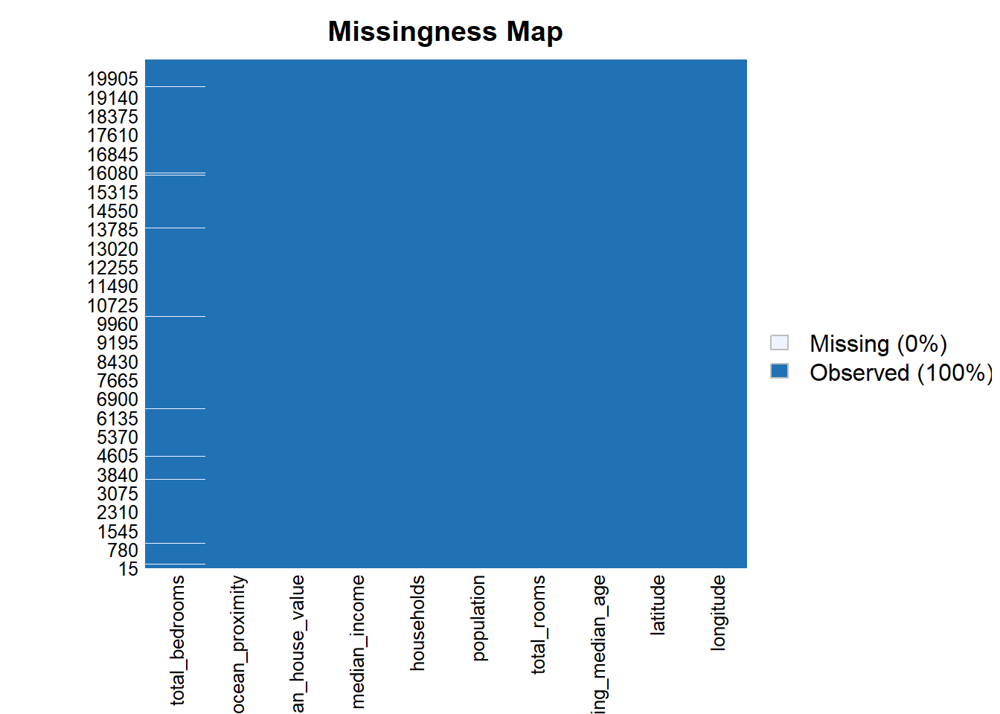
Ahora hagamos la imputación de datos faltantes
Verifiquemos si tiene datos faltantes
## NA_longitude NA_latitude NA_housing_median_age NA_total_rooms NA_total_bedrooms NA_population NA_households
## 1 0 0 0 0 0 0 0
## NA_median_income NA_median_house_value NA_ocean_proximity
## 1 0 0 0## [1] TRUEVamos a convertir la variable “ocean_proximity” en un factor
Análisis exploratorio de median_house_value (Target)
Realicemos el resumen estadístico de la variable
df %>% summarise (n=length(median_house_value),
media=mean(median_house_value),
sd=sd(median_house_value),
mediana = median(median_house_value),
RIC = IQR(median_house_value),
Q1=quantile(median_house_value,0.25),
Q3=quantile(median_house_value,0.75),
minimo=min(median_house_value),
maximo=max(median_house_value),
asimetria=skewness(median_house_value),
curtosis=kurtosis(median_house_value))## n media sd mediana RIC Q1 Q3 minimo maximo asimetria curtosis
## 1 20640 206855.8 115395.6 179700 145125 119600 264725 14999 500001 0.9776922 3.3275Conclusiones
La variable median_house_value presenta un valor medio de 206.855,8 USD y una mediana de 179.700 USD. La media es superior a la mediana, lo que, junto con un coeficiente de asimetría positivo de 0,978, indica que la distribución presenta un sesgo hacia la derecha. El 50 % central de las observaciones se encuentra entre 119.600 USD y 264.725 USD, con un rango intercuartílico de 145.125 USD. Los valores oscilan entre 14.999 USD y 500.001 USD, evidenciando una amplitud considerable. Además, la desviación estándar de 115.395,6 USD indica una dispersión importante de los valores respecto a la media. La curtosis de 3,33 sugiere colas ligeramente más pesadas que las de una distribución normal.
df %>%
ggplot(aes(x=median_house_value)) +
geom_histogram(aes(y=after_stat(density)),
binwidth = 25000,
fill = "#60cc88",
color = "white",
alpha = 0.6)+
geom_density(color = "darkgreen", linewidth = 1.2)+
labs (title = 'Distribución del valor medio de las viviendas',
x = 'valor medio de la casa (USD)',
y = 'densidad')+
theme_bw()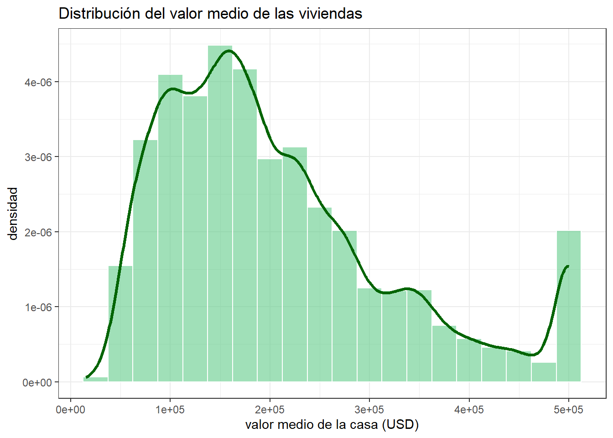
Conclusiones:
El histograma y la curva de densidad muestran que los valores medios de las viviendas se concentran principalmente entre aproximadamente 100.000 dólares y 200.000 dólares. La distribución presenta una cola hacia la derecha, con valores que se extienden hasta aproximadamente 500.000 dólares,lo que evidencia una asimetría positiva, consistente con el valor de asimetría obtenido anteriormente (0,978). Además, se observa una concentración de observaciones en el límite superior cercano a 500.000 dólares.
df %>%
ggplot(aes(x= "", y = median_house_value))+
geom_boxplot(fill = "#9a74a6" , color = "black",
outlier.color = 'darkred')+
stat_summary(fun = mean, geom = 'point', shape = 20,
size = 3, color = 'darkgreen') +
theme_bw()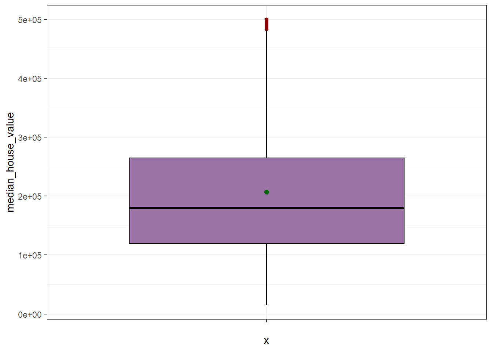
Interpretación: El diagrama de caja muestra que el valor medio de las viviendas tiene una mediana de aproximadamente 179.700 USD, mientras que el 50 % central de los datos se encuentra entre 119.600 y 264.725 USD. Se observan valores atípicos cercanos a 500.000 USD, y la media es superior a la mediana, lo que evidencia una distribución sesgada hacia la derecha.
2.1 Análisis de las variables independientes (características)
df %>%
select(where(is.numeric), -median_house_value) %>%
pivot_longer(
cols = everything(),
names_to = 'variable',
values_to = 'valor'
) %>%
group_by(variable) %>%
summarise (n=length(valor),
media=mean(valor),
sd=sd(valor),
mediana = median(valor),
RIC = IQR(valor),
Q1=quantile(valor,0.25),
Q3=quantile(valor,0.75),
minimo=min(valor),
maximo=max(valor),
asimetria=skewness(valor),
curtosis=kurtosis(valor))## # A tibble: 8 × 12
## variable n media sd mediana RIC Q1 Q3 minimo maximo asimetria curtosis
## <chr> <int> <dbl> <dbl> <dbl> <dbl> <dbl> <dbl> <dbl> <dbl> <dbl> <dbl>
## 1 households 20640 500. 382. 409 325 280 605 1 6082 3.41 25.1
## 2 housing_median_age 20640 28.6 12.6 29 19 18 37 1 52 0.0603 2.20
## 3 latitude 20640 35.6 2.14 34.3 3.78 33.9 37.7 32.5 42.0 0.466 1.88
## 4 longitude 20640 -120. 2.00 -118. 3.79 -122. -118. -124. -114. -0.298 1.67
## 5 median_income 20640 3.87 1.90 3.53 2.18 2.56 4.74 0.500 15.0 1.65 7.95
## 6 population 20640 1425. 1132. 1166 938 787 1725 3 35682 4.94 76.5
## 7 total_bedrooms 20640 538. 419. 438 346. 297 643. 1 6445 3.48 25.2
## 8 total_rooms 20640 2636. 2182. 2127 1700. 1448. 3148 2 39320 4.15 35.6Conclusiones (individuales, cada variable):
Al analizar las ocho variables, se observa que presentan comportamientos estadísticos diferentes. La variable households tiene una media de 499,54 hogares y una mediana de 409, mientras que su valor máximo alcanza 6082, lo que, junto con su asimetría de 3,41, indica una distribución fuertemente sesgada hacia la derecha y la presencia de valores extremos. De manera similar, population presenta una media de 1425,48 habitantes, pero puede alcanzar hasta 35.682, con una asimetría de 4,94 y una curtosis de 76,54, siendo la variable que evidencia con mayor claridad la presencia de valores extremos.
En total_bedrooms y total_rooms también se observa una fuerte asimetría positiva, con valores de 3,48 y 4,15, respectivamente. Además, sus máximos (6445 dormitorios y 39.320 habitaciones) son considerablemente superiores a sus medianas (438 y 2127), lo que confirma que existen observaciones con cantidades excepcionalmente altas.
Por otro lado, housing_median_age presenta un comportamiento mucho más equilibrado: su media es 28,63 y su mediana 29, con una asimetría de apenas 0,06, por lo que su distribución es aproximadamente simétrica. Latitude también presenta una asimetría moderada (0,47) y una curtosis relativamente baja (1,88), mientras que longitude tiene una ligera asimetría negativa (-0,30).
Finalmente, median_income presenta una media de 3,87 y una mediana de 3,53, con una asimetría de 1,65, indicando cierto sesgo hacia valores altos. Su valor máximo de 15,00 también muestra que existen zonas con ingresos considerablemente superiores al nivel central de los datos.
En conclusión, las variables relacionadas con el tamaño de las viviendas y la población (households, population, total_bedrooms y total_rooms) son las que presentan mayor dispersión, asimetría y presencia de valores extremos. En contraste, housing_median_age, latitude y longitude muestran distribuciones más equilibradas. Por lo tanto, antes de realizar análisis posteriores, es importante considerar la influencia de estos valores extremos, ya que pueden afectar medidas estadísticas y modelos que se construyan a partir de estos datos.
Caja de bigotes de varias variables
library(patchwork)
# Boxplot de housing_median_age
p1 <- df %>%
ggplot(aes(x = "", y = housing_median_age)) +
geom_boxplot(fill = "#1f77b4", alpha = 0.7) +
labs(
title = "Antigüedad media de las casas",
y = "Años",
x = ""
) +
theme_bw()
# Boxplot de total_rooms
p2 <- df %>%
ggplot(aes(x = "", y = total_rooms)) +
geom_boxplot(fill = "#2ca02c", alpha = 0.7) +
labs(
title = "Número total de habitaciones",
y = "Habitaciones",
x = ""
) +
theme_bw()
# Boxplot de total_bedrooms
p3 <- df %>%
ggplot(aes(x = "", y = total_bedrooms)) +
geom_boxplot(fill = "#d62728", alpha = 0.7) +
labs(
title = "Número total de dormitorios",
y = "Dormitorios",
x = ""
) +
theme_bw()
# Primera fila
p1 + p2 + p3 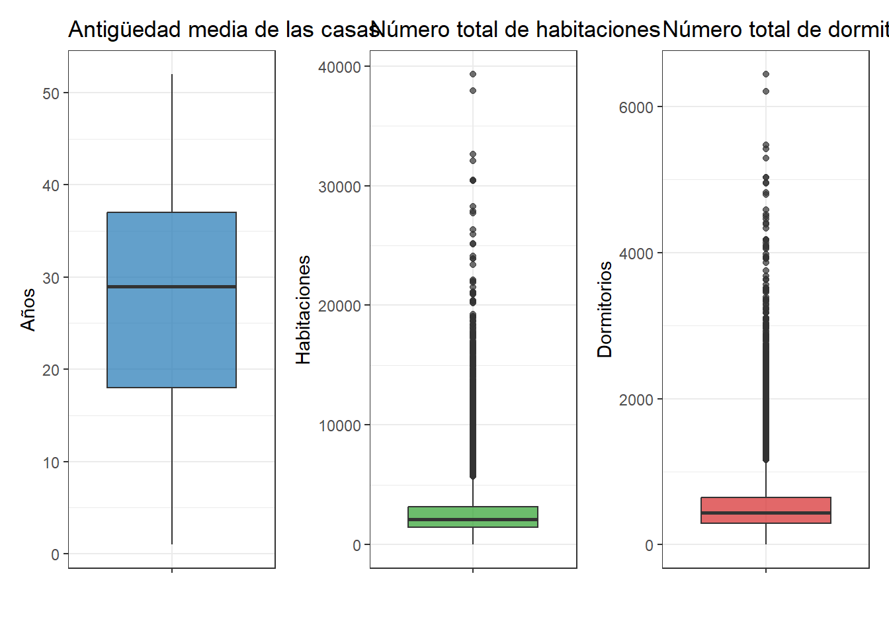
Interpretación de cada boxplot:
Antigüedad media de las casas: En el gráfico se evidencia que la antigüedad de las casas está relativamente distribuida alrededor de los 29 años, siendo esta la mediana, los valores se encuentran entre 1 y 52 años aproximadamente, y no hay presencia de valores atípicos a considerar. Número total de habitaciones: La mayoría de los datos se concentra alrededor de 2.127 habitaciones, pero se observan muchos valores atípicos hacia valores altos, llegando hasta aproximadamente 40.000. Esto indica una fuerte asimetría hacia la derecha. Número total de dormitorios: La mediana es de aproximadamente 438 dormitorios y la mayoría de los datos se concentra alrededor de este valor. Se presentan numerosos valores atípicos altos, llegando hasta unos 6.445 dormitorios, lo que evidencia una asimetría positiva.
Ahora veamos la variable de ocean_proximity
# Tabla de frecuencias para ocean_proximity
tabla_ocean <- df %>%
count(ocean_proximity, name = "Frecuencia") %>%
mutate(
Porcentaje = round(Frecuencia / sum(Frecuencia) * 100, 2),
Variable = "ocean_proximity",
Categoria = as.character(ocean_proximity)
) %>%
select(Variable, Categoria, Frecuencia, Porcentaje)
tabla_ocean## Variable Categoria Frecuencia Porcentaje
## 1 ocean_proximity <1H OCEAN 9136 44.26
## 2 ocean_proximity INLAND 6551 31.74
## 3 ocean_proximity ISLAND 5 0.02
## 4 ocean_proximity NEAR BAY 2290 11.09
## 5 ocean_proximity NEAR OCEAN 2658 12.88Interpretación:
La mayoría de las viviendas se encuentran a menos de una hora del océano (44,26%), seguida de las viviendas ubicadas en zonas del interior (31,74%). Las categorías NEAR OCEAN y NEAR BAY presentan una menor proporción, mientras que ISLAND tiene una representación mínima (0,02%). Por lo tanto, los datos están principalmente concentrados en viviendas cercanas al océano y en zonas interiores.
tabla_ocean_b <- df %>%
count(ocean_proximity, name = "Frecuencia") %>%
mutate(
Porcentaje = round(Frecuencia / sum(Frecuencia) * 100, 1),
Etiqueta = paste0(Frecuencia, " (", Porcentaje, "%)")
)
ggplot(tabla_ocean_b, aes(x = reorder(ocean_proximity, -Frecuencia), y = Frecuencia)) +
geom_col(fill = "#008B8B", width = 0.6) +
geom_text(aes(label = Etiqueta), vjust = -0.5, size = 4.5) +
facet_wrap(~ "Distribución de la variable ocean_proximity") +
scale_y_continuous(expand = expansion(mult = c(0, 0.15))) +
labs(
x = "Proximidad al océano",
y = "Frecuencia (Porcentaje)"
) +
theme_bw(base_size = 12) +
theme(
plot.title = element_blank(),
strip.background = element_rect(fill = "gray80", color = NA),
strip.text = element_text(face = "bold"),
panel.grid.major.x = element_blank())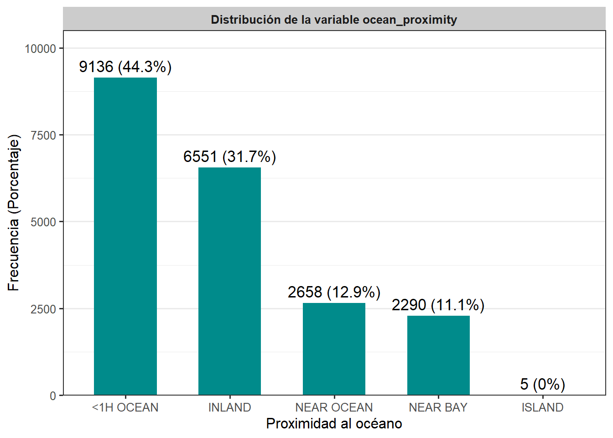
Veamos gráficos para cada variable restante y su interpretación
Histograma de la variable “longitud”
ggplot(df, aes(x = longitude)) +
geom_histogram(bins = 30, fill = "#5c496e", color = "white") +
labs(
title = "Distribución de la longitud",
x = "Longitud",
y = "Frecuencia"
) +
theme_bw()
Interpretación:
La distribución de la longitud presenta un comportamiento bimodal, con dos concentraciones principales de observaciones. El primer pico se ubica alrededor de los -122°, mientras que la mayor concentración de datos se encuentra entre los -118° y -117°, alcanzando más de 3.500 observaciones. En el intervalo intermedio de longitud, las frecuencias disminuyen sensiblemente, oscilando por debajo de las 1.000 observaciones. Por lo tanto, la longitud no sigue una distribución simétrica, sino que evidencia dos zonas claramente identificables donde se agrupan la mayoría de los registros del conjunto de datos.
Histograma de la variable “latitud”
ggplot(df, aes(x = latitude)) +
geom_histogram(bins = 30, fill = "#2ca02c", color = "white") +
labs(
title = "Distribución de la latitud",
x = "Latitud",
y = "Frecuencia"
) +
theme_bw()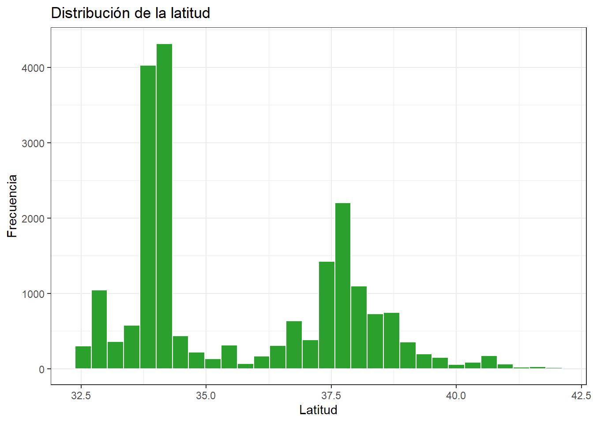
Interpretación:
El gráfico muestra que los datos de latitud se agrupan principalmente en dos sectores del rango. El punto de mayor frecuencia se localiza entre los 34° y 34,5°, donde se registran más de 4.000 observaciones. Más adelante, entre los 37,5° y 38°, surge otro pico destacado que supera los 2.000 registros. Fuera de estos dos tramos, la cantidad de datos baja drásticamente, manteniéndose casi siempre por debajo de las 1.000 observaciones. Esto demuestra una distribución asimétrica donde la gran mayoría de las casas están concentradas en dos franjas geográficas específicas.
Diagrama de caja y bigotes de la variable “población”
ggplot(df, aes(x = "", y = population)) +
geom_boxplot(fill = "#d62728", alpha = 0.7) +
labs(
title = "Distribución de la población",
x = "",
y = "Población"
) +
theme_bw()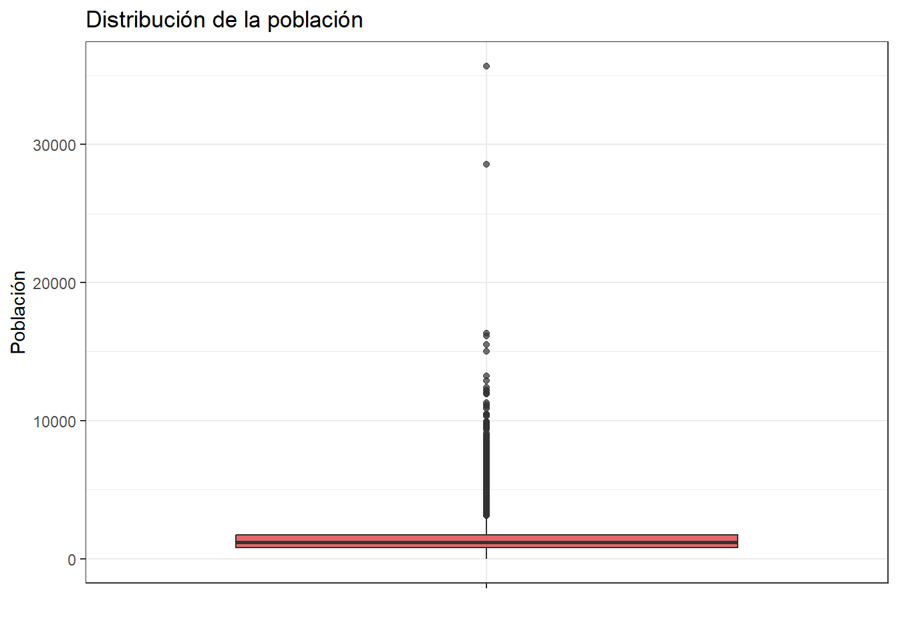
Interpretación:
El diagrama de caja muestra que la gran mayoría de los datos se concentran en valores reducidos de población, con la caja apretada muy cerca de cero. Por encima de la caja se observa una gran cantidad de valores atípicos que se extienden verticalmente hasta llegar a un punto máximo extremo que supera los 35.000 habitantes. Esta estructura evidencia una clara asimetría positiva en la variable, donde la mayoría de los registros tienen valores bajos y solo un pequeño grupo presenta valores considerablemente elevados.
Diagrama de caja y bigote de la variable “número de hogares”
ggplot(df, aes(x = "", y = households)) +
geom_boxplot(fill = "#9467bd", alpha = 0.7) +
labs(
title = "Distribución de los hogares",
x = "",
y = "Número de hogares"
) +
theme_bw()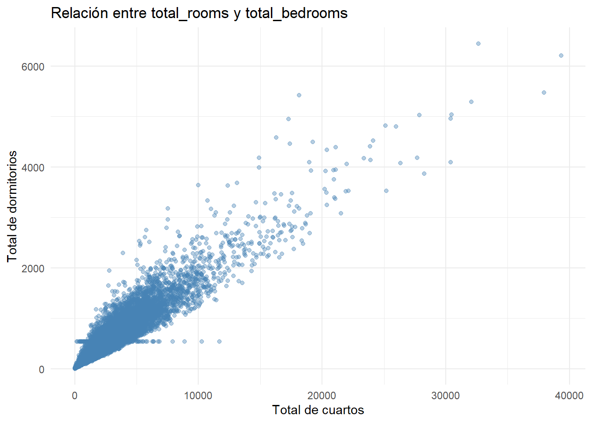
Interpretación:
El diagrama de caja muestra que la mayor parte de las observaciones se concentra en valores bajos del número de hogares, ubicándose la caja muy cerca del eje inferior. A partir de aproximadamente los 1.000 hogares en adelante, se observa una larga secuencia de valores atípicos que se extienden verticalmente hasta alcanzar un punto máximo que supera los 6.000 hogares. Esta distribución refleja una asimetría positiva en la variable, donde la amplia mayoría de los datos toma valores relativamente pequeños y solo unas pocas observaciones presentan cifras considerablemente altas.
Histograma de la variable “ingreso medio”
ggplot(df, aes(x = median_income)) +
geom_histogram(bins = 30, fill = "#0d521e", color = "white") +
labs(
title = "Distribución del ingreso medio",
x = "Ingreso medio",
y = "Frecuencia"
) +
theme_bw()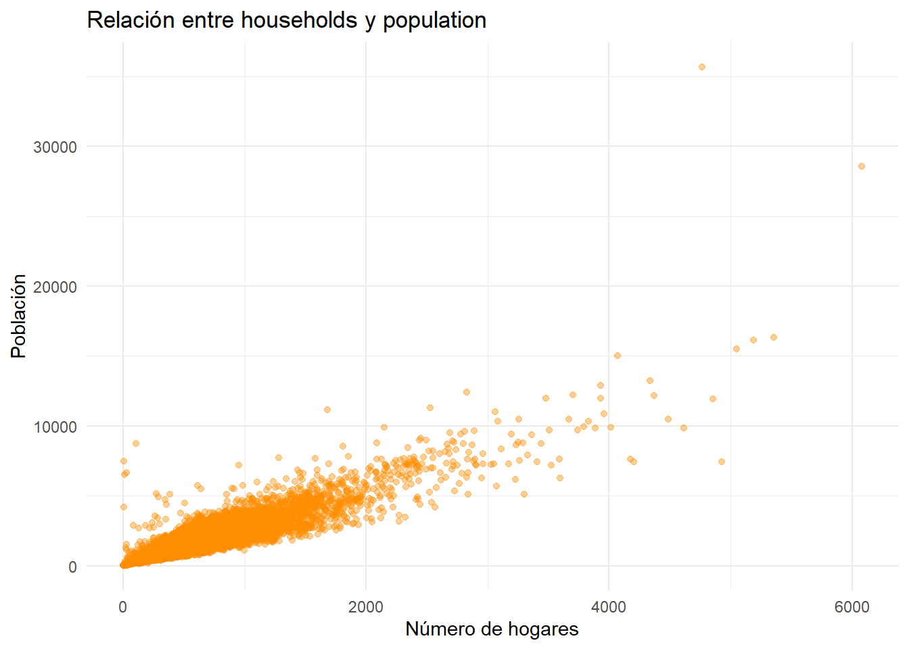
Interpretación:
El histograma refleja que la mayor parte de las observaciones se concentran en valores de ingreso medio entre 2 y 5, alcanzando un pico de frecuencia máximo cercano a las 2.500 observaciones alrededor del valor 3.5. A partir de allí, a medida que el ingreso medio aumenta, la frecuencia disminuye progresivamente, generando una cola alargada hacia la derecha que se extiende hasta valores cercanos a 10. Además, se aprecia una pequeña concentración aislada en el valor extremo de 15. Esto evidencia una distribución unimodal con un claro sesgo o asimetría positiva.
2.2 Análisis exploratorio bivariado con la variable respuesta (Valor medio de la vivienda)
Análisis de la relación entre el ingreso medio y el valor medio de las viviendas
df %>%
ggplot(aes(x= median_income, y=median_house_value)) +
geom_point(alpha = 0.4, color = 'darkblue') +
labs(
y= 'Valor medio de la vivienda',
x = 'Ingreso medio') +
facet_grid(. ~ 'Dispersión entre ingreso medio y el valor medio de la vivienda') +
theme_bw()
Conclusiones:
Se observa una relación positiva entre el ingreso medio y el valor medio de la vivienda. En general, las viviendas tienden a presentar mayores valores a medida que aumenta el ingreso medio. Sin embargo, existe una considerable dispersión, por lo que el ingreso no explica por sí solo el valor de las viviendas. También se observa una concentración de valores en 500.000 USD, indicando un posible límite superior en los datos.
Ahora comparemos el valor medio de la vivienda según la proximidad al océano.
df %>%
group_by(ocean_proximity) %>%
summarise (n=length(median_house_value),
media=mean(median_house_value),
sd=sd(median_house_value),
mediana = median(median_house_value),
RIC = IQR(median_house_value),
Q1=quantile(median_house_value,0.25),
Q3=quantile(median_house_value,0.75),
minimo=min(median_house_value),
maximo=max(median_house_value),
asimetria=skewness(median_house_value),
curtosis=kurtosis(median_house_value))## # A tibble: 5 × 12
## ocean_proximity n media sd mediana RIC Q1 Q3 minimo maximo asimetria curtosis
## <fct> <int> <dbl> <dbl> <dbl> <dbl> <dbl> <dbl> <dbl> <dbl> <dbl> <dbl>
## 1 <1H OCEAN 9136 240084. 106124. 214850 125000 164100 289100 17500 500001 0.986 3.32
## 2 INLAND 6551 124805. 70008. 108500 71450 77500 148950 14999 500001 2.11 9.32
## 3 ISLAND 5 380440 80560. 414700 150000 300000 450000 287500 450000 -0.326 1.22
## 4 NEAR BAY 2290 259212. 122819. 233800 183200 162500 345700 22500 500001 0.544 2.29
## 5 NEAR OCEAN 2658 249434. 122477. 229450 172750 150000 322750 22500 500001 0.623 2.46Conclusiones:
Se observa que la proximidad al océano está relacionada con el valor de las viviendas. Las viviendas ubicadas en zonas cercanas a la costa presentan, en general, valores medios más altos que las ubicadas en zonas interiores. La categoría INLAND tiene el menor valor medio (124.805 USD), mientras que ISLAND presenta el mayor (380.440 USD); sin embargo, este último resultado debe tomarse con precaución debido a que solo cuenta con 5 observaciones.
Veamos un gráfico de cajas y bigotes

Interpretación:
El diagrama de caja permite visualizar y complementar los resultados obtenidos en la tabla. Se confirma que las viviendas ubicadas en zonas interiores (INLAND) presentan los valores más bajos, mientras que las categorías cercanas al océano muestran valores de vivienda generalmente más altos. En INLAND se observa una gran cantidad de valores atípicos superiores, debido a que, aunque la mayoría de las viviendas presenta valores relativamente bajos, existe un grupo de viviendas con precios considerablemente mayores, llegando incluso a 500.000 USD. También se observa una mayor dispersión en categorías como <1H OCEAN y NEAR BAY. En el caso de ISLAND, aunque presenta los valores más altos, estos deben interpretarse con precaución debido a su reducido número de observaciones.
Longitud y valor medio de la vivienda
df %>%
ggplot(aes(x = longitude, y = median_house_value)) +
geom_point(alpha = 0.4, color = 'palevioletred') +
labs(y = 'Valor medio de la vivienda', x = 'Longitud') +
facet_grid(. ~ 'Dispersión entre longitud y el valor medio de la vivienda') +
theme_bw() Conclusiones:
Conclusiones:
No se observa una relación lineal clara entre la longitud geográfica y el valor medio de la vivienda. Los datos presentan una alta concentración de puntos en ciertos rangos de longitud, mientras que los valores de las viviendas se encuentran bastante dispersos. Aunque se observan algunos valores de vivienda más altos en determinadas longitudes, no se puede establecer una relación directa entre ambas variables.
Latitud y valor medio de las casas
df %>%
ggplot(aes(x = latitude, y = median_house_value)) +
geom_point(alpha = 0.4, color = 'slategray') +
labs(y = 'Valor medio de la vivienda', x = 'Latitud') +
facet_grid(. ~ 'Dispersión entre latitud y el valor medio de la vivienda') +
theme_bw()
Conclusiones:
La distribución de los puntos muestra que los valores de la vivienda no aumentan ni disminuyen de manera constante a medida que cambia la latitud. Se pueden identificar concentraciones de valores altos en distintos rangos de latitud, mientras que en las zonas intermedias también se presentan valores bajos y altos. Además, los puntos se encuentran bastante dispersos a lo largo del eje vertical, por lo que una misma latitud puede presentar diferentes valores de vivienda. En general, no se aprecia una relación lineal clara entre la latitud y el valor medio de la vivienda, aunque sí se observan diferentes concentraciones de datos a lo largo del rango de latitudes.
Antigüedad media de la vivienda y valor medio de la vivienda
df %>%
ggplot(aes(x = housing_median_age, y = median_house_value)) +
geom_point(alpha = 0.4, color = 'chocolate') +
labs(y = 'Valor medio de la vivienda', x = 'Antigüedad media de la vivienda') +
facet_grid(. ~ 'Dispersión entre antigüedad y el valor medio de la vivienda') +
theme_bw()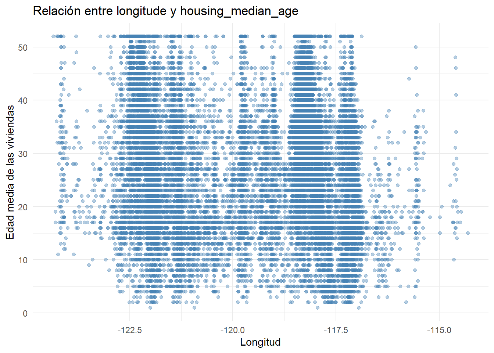
Conclusiones:
En este gráfico, la antigüedad de las viviendas toma valores desde aproximadamente 1 hasta 52 años, y los puntos se encuentran distribuidos a lo largo de prácticamente todo este intervalo. Para cada nivel de antigüedad se presentan valores de vivienda bastante variados, desde valores bajos hasta cerca de 500.000. Además, se aprecia una gran concentración de observaciones en varios niveles de antigüedad, sin que exista una dirección clara en la distribución de los puntos. Por lo tanto, no se identifica una relación lineal evidente entre la antigüedad media de la vivienda y su valor medio a partir de este gráfico.
Total de habitaciones y valor medio de las viviendas
df %>%
ggplot(aes(x = total_rooms, y = median_house_value)) +
geom_point(alpha = 0.4, color = 'seagreen') +
labs(y = 'Valor medio de la vivienda', x = 'Total de habitaciones') +
facet_grid(. ~ 'Dispersión entre total de habitaciones y el valor medio de la vivienda') +
theme_bw()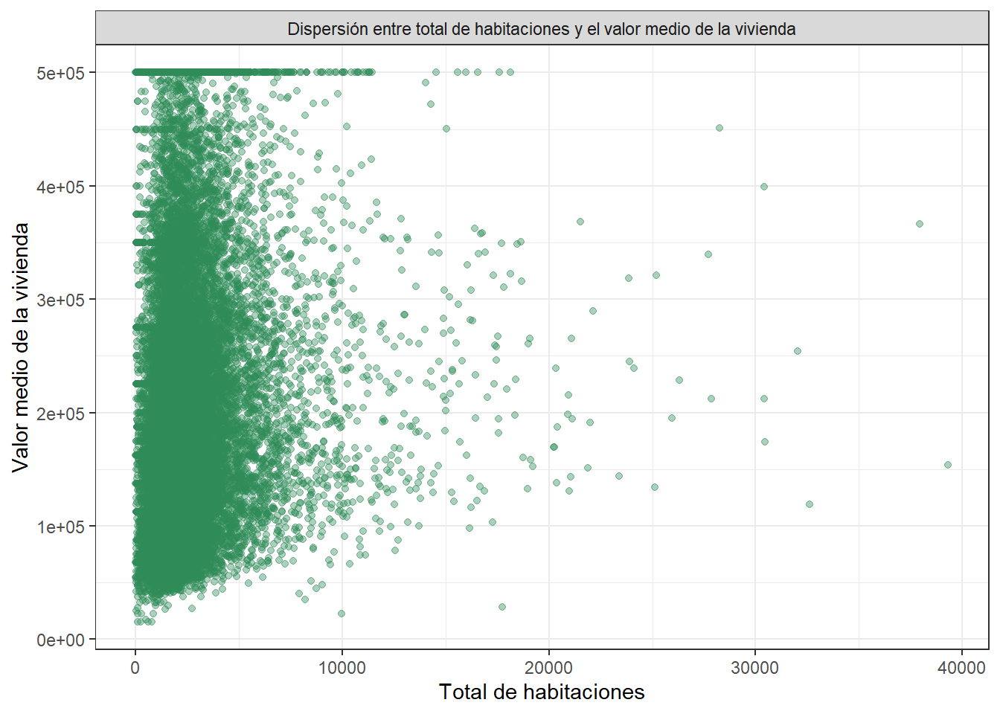
Conclusiones:
La mayor cantidad de observaciones se concentra cuando el total de habitaciones es bajo, principalmente por debajo de unas 10.000 habitaciones. En este rango, el valor medio de la vivienda presenta una variación considerable, con puntos distribuidos desde valores bajos hasta el máximo cercano a 500.000. Cuando el número de habitaciones aumenta, se encuentran cada vez menos observaciones y algunos valores bastante alejados de la concentración principal, llegando hasta cerca de 40.000 habitaciones. En general, la dispersión de los puntos no muestra una relación lineal clara entre el total de habitaciones y el valor medio de la vivienda.
Total de dormitorios y valo medio de las viviendas
df %>%
ggplot(aes(x = total_bedrooms, y = median_house_value)) +
geom_point(alpha = 0.4, color = 'turquoise') +
labs(y = 'Valor medio de la vivienda', x = 'Total de dormitorios') +
facet_grid(. ~ 'Dispersión entre total de dormitorios y el valor medio de la vivienda') +
theme_bw()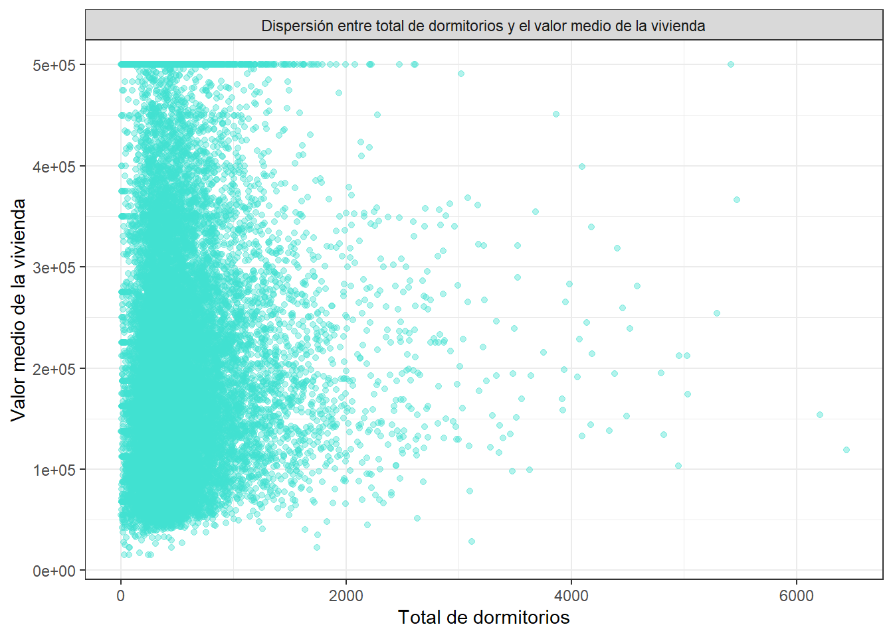
Conclusiones:
La mayor parte de las observaciones se encuentra en valores relativamente bajos de dormitorios, aproximadamente entre 0 y 1.500. Dentro de este rango, el valor medio de la vivienda presenta una variación bastante amplia, desde valores cercanos a 0 hasta aproximadamente 500.000. A medida que aumenta el número de dormitorios, se observa una disminución en la cantidad de puntos y una mayor separación entre las observaciones. También aparecen algunos valores extremos que superan los 4.000 dormitorios. En general, la distribución de los puntos no permite identificar una relación lineal definida entre el total de dormitorios y el valor medio de la vivienda.
Población y valor medio de las viviendas
df %>%
ggplot(aes(x = population, y = median_house_value)) +
geom_point(alpha = 0.4, color = 'mediumpurple') +
labs(y = 'Valor medio de la vivienda', x = 'Población') +
facet_grid(. ~ 'Dispersión entre población y el valor medio de la vivienda') +
theme_bw()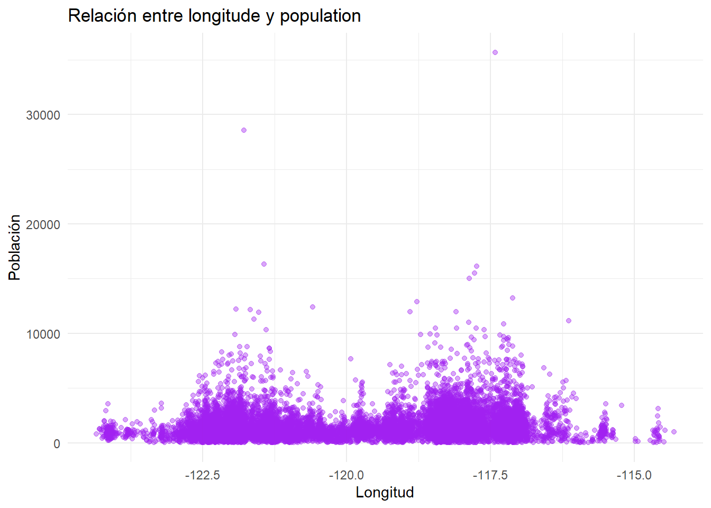
Conclusiones
Se observa una alta concentración de datos en los valores bajos de población, donde el valor medio de la vivienda presenta una amplia variación. A medida que aumenta la población, la cantidad de observaciones disminuye y los puntos aparecen más dispersos. También se observan algunos valores de población bastante elevados, que se encuentran alejados de la mayor concentración de datos. En general, el gráfico no muestra una relación lineal clara entre la población y el valor medio de la vivienda.
Número de hogares y valor medio de las viviendas
df %>%
ggplot(aes(x = households, y = median_house_value)) +
geom_point(alpha = 0.4, color = 'indianred') +
labs(y = 'Valor medio de la vivienda', x = 'Número de hogares') +
facet_grid(. ~ 'Dispersión entre número de hogares y el valor medio de la vivienda') +
theme_bw()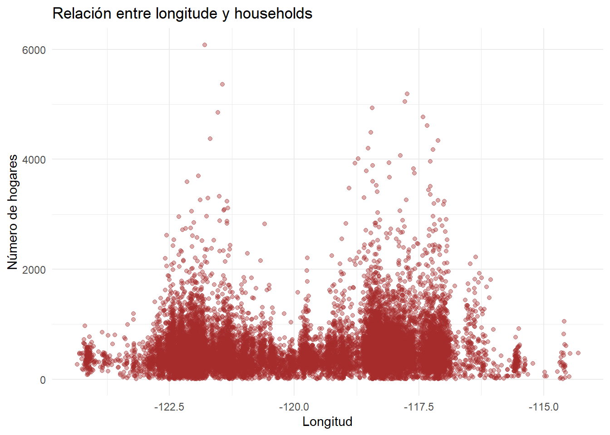
Conclusiones:
Se observa una alta concentración de puntos en los valores bajos del número de hogares. A medida que aumenta el número de hogares, los puntos se vuelven menos frecuentes y se encuentran más dispersos en cuanto al valor de la vivienda. También se observan algunos valores de viviendas cercanos a 500.000 USD en distintos rangos de hogares. En general, no se aprecia una relación lineal clara entre el número de hogares y el valor medio de la vivienda.
2.3 Análisis de variables independientes vs independientes
Paquete GGally
## plot: [1, 1] [>------------------------------------------------------------------------------------] 1% est: 0s
## plot: [1, 2] [=>-----------------------------------------------------------------------------------] 2% est: 7s
## plot: [1, 3] [==>----------------------------------------------------------------------------------] 3% est: 8s
## plot: [1, 4] [==>----------------------------------------------------------------------------------] 4% est: 8s
## plot: [1, 5] [===>---------------------------------------------------------------------------------] 5% est: 8s
## plot: [1, 6] [====>--------------------------------------------------------------------------------] 6% est: 8s
## plot: [1, 7] [=====>-------------------------------------------------------------------------------] 7% est: 8s
## plot: [1, 8] [======>------------------------------------------------------------------------------] 8% est: 8s
## plot: [1, 9] [=======>-----------------------------------------------------------------------------] 9% est: 8s
## plot: [1, 10] [=======>----------------------------------------------------------------------------] 10% est: 8s
## plot: [2, 1] [========>----------------------------------------------------------------------------] 11% est: 9s
## plot: [2, 2] [=========>---------------------------------------------------------------------------] 12% est: 9s
## plot: [2, 3] [==========>--------------------------------------------------------------------------] 13% est: 8s
## plot: [2, 4] [===========>-------------------------------------------------------------------------] 14% est: 8s
## plot: [2, 5] [============>------------------------------------------------------------------------] 15% est: 8s
## plot: [2, 6] [=============>-----------------------------------------------------------------------] 16% est: 8s
## plot: [2, 7] [=============>-----------------------------------------------------------------------] 17% est: 8s
## plot: [2, 8] [==============>----------------------------------------------------------------------] 18% est: 8s
## plot: [2, 9] [===============>---------------------------------------------------------------------] 19% est: 8s
## plot: [2, 10] [================>-------------------------------------------------------------------] 20% est: 8s
## plot: [3, 1] [=================>-------------------------------------------------------------------] 21% est: 8s
## plot: [3, 2] [==================>------------------------------------------------------------------] 22% est: 8s
## plot: [3, 3] [===================>-----------------------------------------------------------------] 23% est: 8s
## plot: [3, 4] [===================>-----------------------------------------------------------------] 24% est: 8s
## plot: [3, 5] [====================>----------------------------------------------------------------] 25% est: 7s
## plot: [3, 6] [=====================>---------------------------------------------------------------] 26% est: 7s
## plot: [3, 7] [======================>--------------------------------------------------------------] 27% est: 7s
## plot: [3, 8] [=======================>-------------------------------------------------------------] 28% est: 7s
## plot: [3, 9] [========================>------------------------------------------------------------] 29% est: 7s
## plot: [3, 10] [========================>-----------------------------------------------------------] 30% est: 7s
## plot: [4, 1] [=========================>-----------------------------------------------------------] 31% est: 7s
## plot: [4, 2] [==========================>----------------------------------------------------------] 32% est: 7s
## plot: [4, 3] [===========================>---------------------------------------------------------] 33% est: 7s
## plot: [4, 4] [============================>--------------------------------------------------------] 34% est: 7s
## plot: [4, 5] [=============================>-------------------------------------------------------] 35% est: 6s
## plot: [4, 6] [==============================>------------------------------------------------------] 36% est: 6s
## plot: [4, 7] [==============================>------------------------------------------------------] 37% est: 6s
## plot: [4, 8] [===============================>-----------------------------------------------------] 38% est: 6s
## plot: [4, 9] [================================>----------------------------------------------------] 39% est: 6s
## plot: [4, 10] [=================================>--------------------------------------------------] 40% est: 6s
## plot: [5, 1] [==================================>--------------------------------------------------] 41% est: 6s
## plot: [5, 2] [===================================>-------------------------------------------------] 42% est: 6s
## plot: [5, 3] [====================================>------------------------------------------------] 43% est: 6s
## plot: [5, 4] [====================================>------------------------------------------------] 44% est: 6s
## plot: [5, 5] [=====================================>-----------------------------------------------] 45% est: 6s
## plot: [5, 6] [======================================>----------------------------------------------] 46% est: 5s
## plot: [5, 7] [=======================================>---------------------------------------------] 47% est: 5s
## plot: [5, 8] [========================================>--------------------------------------------] 48% est: 5s
## plot: [5, 9] [=========================================>-------------------------------------------] 49% est: 5s
## plot: [5, 10] [=========================================>------------------------------------------] 50% est: 5s
## plot: [6, 1] [==========================================>------------------------------------------] 51% est: 5s
## plot: [6, 2] [===========================================>-----------------------------------------] 52% est: 5s
## plot: [6, 3] [============================================>----------------------------------------] 53% est: 5s
## plot: [6, 4] [=============================================>---------------------------------------] 54% est: 5s
## plot: [6, 5] [==============================================>--------------------------------------] 55% est: 5s
## plot: [6, 6] [===============================================>-------------------------------------] 56% est: 4s
## plot: [6, 7] [===============================================>-------------------------------------] 57% est: 4s
## plot: [6, 8] [================================================>------------------------------------] 58% est: 4s
## plot: [6, 9] [=================================================>-----------------------------------] 59% est: 4s
## plot: [6, 10] [=================================================>----------------------------------] 60% est: 4s
## plot: [7, 1] [===================================================>---------------------------------] 61% est: 4s
## plot: [7, 2] [====================================================>--------------------------------] 62% est: 4s
## plot: [7, 3] [=====================================================>-------------------------------] 63% est: 4s
## plot: [7, 4] [=====================================================>-------------------------------] 64% est: 4s
## plot: [7, 5] [======================================================>------------------------------] 65% est: 4s
## plot: [7, 6] [=======================================================>-----------------------------] 66% est: 3s
## plot: [7, 7] [========================================================>----------------------------] 67% est: 3s
## plot: [7, 8] [=========================================================>---------------------------] 68% est: 3s
## plot: [7, 9] [==========================================================>--------------------------] 69% est: 3s
## plot: [7, 10] [==========================================================>-------------------------] 70% est: 3s
## plot: [8, 1] [===========================================================>-------------------------] 71% est: 3s
## plot: [8, 2] [============================================================>------------------------] 72% est: 3s
## plot: [8, 3] [=============================================================>-----------------------] 73% est: 3s
## plot: [8, 4] [==============================================================>----------------------] 74% est: 3s
## plot: [8, 5] [===============================================================>---------------------] 75% est: 3s
## plot: [8, 6] [================================================================>--------------------] 76% est: 2s
## plot: [8, 7] [================================================================>--------------------] 77% est: 2s
## plot: [8, 8] [=================================================================>-------------------] 78% est: 2s
## plot: [8, 9] [==================================================================>------------------] 79% est: 2s
## plot: [8, 10] [==================================================================>-----------------] 80% est: 2s
## plot: [9, 1] [====================================================================>----------------] 81% est: 2s
## plot: [9, 2] [=====================================================================>---------------] 82% est: 2s
## plot: [9, 3] [======================================================================>--------------] 83% est: 2s
## plot: [9, 4] [======================================================================>--------------] 84% est: 2s
## plot: [9, 5] [=======================================================================>-------------] 85% est: 2s
## plot: [9, 6] [========================================================================>------------] 86% est: 1s
## plot: [9, 7] [=========================================================================>-----------] 87% est: 1s
## plot: [9, 8] [==========================================================================>----------] 88% est: 1s
## plot: [9, 9] [===========================================================================>---------] 89% est: 1s
## plot: [9, 10] [===========================================================================>--------] 90% est: 1s
## plot: [10, 1] [===========================================================================>--------] 91% est: 1s
## `stat_bin()` using `bins = 30`. Pick better value `binwidth`. plot: [10, 2]
## [============================================================================>-------] 92% est: 1s `stat_bin()`
## using `bins = 30`. Pick better value `binwidth`. plot: [10, 3]
## [=============================================================================>------] 93% est: 1s `stat_bin()`
## using `bins = 30`. Pick better value `binwidth`. plot: [10, 4]
## [==============================================================================>-----] 94% est: 1s `stat_bin()`
## using `bins = 30`. Pick better value `binwidth`. plot: [10, 5]
## [===============================================================================>----] 95% est: 1s `stat_bin()`
## using `bins = 30`. Pick better value `binwidth`. plot: [10, 6]
## [================================================================================>---] 96% est: 0s `stat_bin()`
## using `bins = 30`. Pick better value `binwidth`. plot: [10, 7]
## [================================================================================>---] 97% est: 0s `stat_bin()`
## using `bins = 30`. Pick better value `binwidth`. plot: [10, 8]
## [=================================================================================>--] 98% est: 0s `stat_bin()`
## using `bins = 30`. Pick better value `binwidth`. plot: [10, 9]
## [==================================================================================>-] 99% est: 0s `stat_bin()`
## using `bins = 30`. Pick better value `binwidth`. plot: [10, 10]
## [===================================================================================]100% est: 0s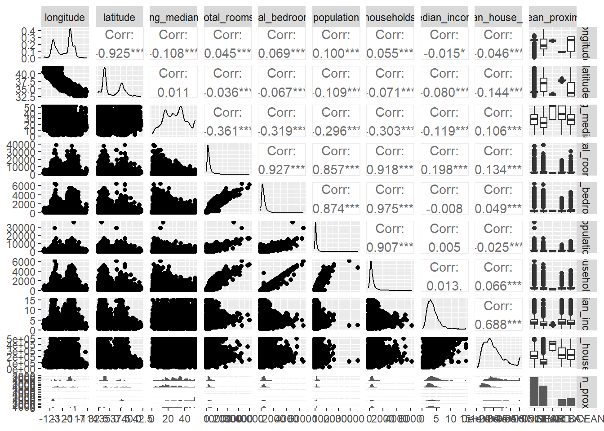
Con el propósito de realizar una exploración inicial de las posibles relaciones entre las variables independientes, se utilizó la función ggpairs del paquete GGally. Esta herramienta permitió visualizar de manera conjunta las variables numéricas y obtener una primera aproximación al comportamiento y a los patrones de asociación existentes entre ellas.
Esta exploración funciona como un primer acercamiento al análisis que se desarrollará posteriormente, ya que permite identificar de forma visual qué relaciones podrían presentar patrones más marcados y cuáles podrían requerir una revisión más detallada. Sin embargo, en esta etapa no se pretende establecer conclusiones definitivas sobre la intensidad de las relaciones ni calcular coeficientes de correlación, debido a que este análisis se realizará posteriormente considerando todas las variables.
En el gráfico se pueden observar patrones especialmente notorios entre total_rooms, total_bedrooms, population y households, donde se aprecia una tendencia ascendente entre varias de estas variables. También se observa una relación particular entre longitude y latitude, asociada a la distribución espacial de los datos. Estas observaciones permiten tener una idea preliminar de las relaciones que serán objeto de análisis en las siguientes etapas.
Por lo tanto, el uso de ggpairs constituye una herramienta de exploración y reconocimiento de patrones que sirve como punto de partida para el análisis de correlación entre todas las variables. Los resultados obtenidos posteriormente permitirán determinar con mayor fundamento qué relaciones son relevantes y, a partir de ello, evaluar posibles transformaciones o combinaciones de variables mediante la ingeniería de características.
1. total_rooms vs total_bedrooms
ggplot(df, aes(x = total_rooms, y = total_bedrooms)) +
geom_point(alpha = 0.4, color = "steelblue") +
labs(title = "Relación entre total_rooms y total_bedrooms",
x = "Total de cuartos", y = "Total de dormitorios") +
theme_minimal()
Interpretación:
Se observa una relación positiva fuerte entre ambas variables: a mayor número de cuartos totales, mayor es el número de dormitorios. Los puntos se concentran principalmente en valores bajos (menos de 10,000 cuartos), formando una nube densa con tendencia ascendente clara. A medida que aumentan los valores, la dispersión también aumenta, y se identifican algunos valores atípicos que se alejan de la tendencia general, especialmente en la parte superior derecha del gráfico.
2. population vs households
ggplot(df, aes(x = households, y = population)) +
geom_point(alpha = 0.4, color = "darkorange") +
labs(title = "Relación entre households y population",
x = "Número de hogares", y = "Población") +
theme_minimal()
Interpretación:
Se observa una relación positiva fuerte entre ambas variables: a mayor número de hogares, mayor es la población. Los puntos se concentran principalmente en valores bajos (menos de 2,000 hogares), formando una nube densa con tendencia ascendente clara. A medida que aumentan los valores, la dispersión también aumenta, y se identifican algunos valores atípicos que se alejan de la tendencia general, especialmente dos puntos ubicados en la parte superior derecha del gráfico con población muy alta respecto al número de hogares.
3. total_rooms vs population
ggplot(df, aes(x = total_rooms, y = population)) +
geom_point(alpha = 0.4, color = "darkgreen") +
labs(title = "Relación entre total_rooms y population",
x = "Total de cuartos", y = "Población") +
theme_minimal()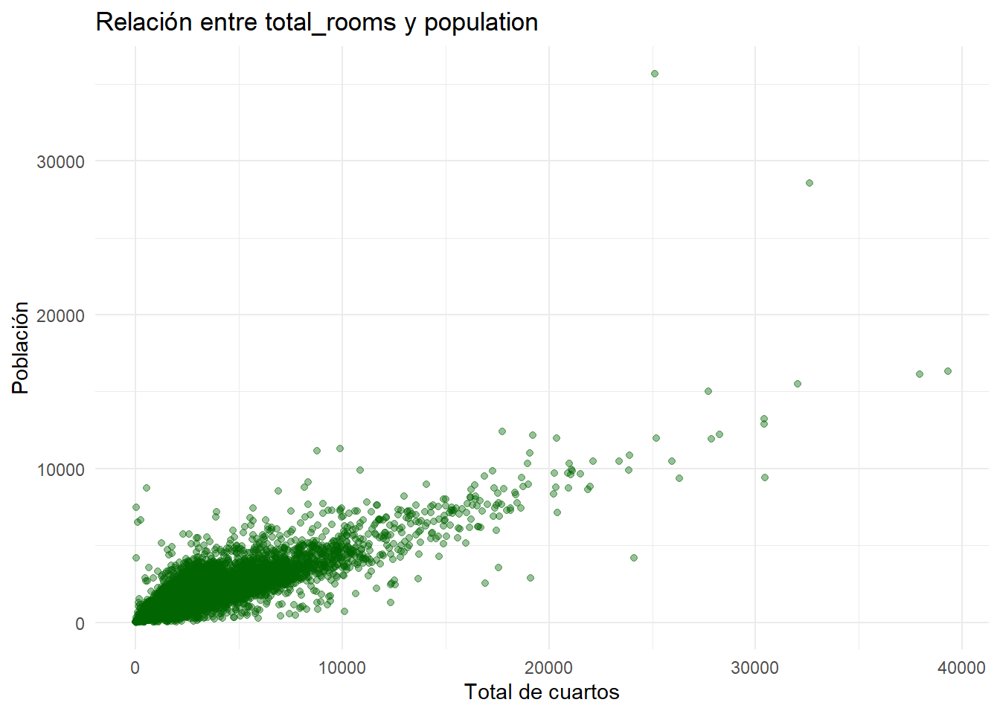
Interpretación:
Se observa una relación positiva entre ambas variables, aunque con mayor dispersión que en las relaciones anteriores: a mayor número de cuartos, mayor tiende a ser la población, pero la relación no es tan estrecha. Los puntos se concentran principalmente en valores bajos (menos de 10,000 cuartos), formando una nube densa con tendencia ascendente. A medida que aumentan los valores, la dispersión se hace mucho más notoria, y se identifican varios valores atípicos, especialmente en la parte derecha del gráfico donde algunos puntos muestran población baja para un número alto de cuartos, y otros muestran lo contrario.
4. longitud vs latitude
ggplot(df, aes(x = longitude, y = latitude)) +
geom_point(alpha = 0.4, color = "purple") +
labs(title = "Distribución geográfica de las observaciones",
x = "Longitud", y = "Latitud") +
theme_minimal()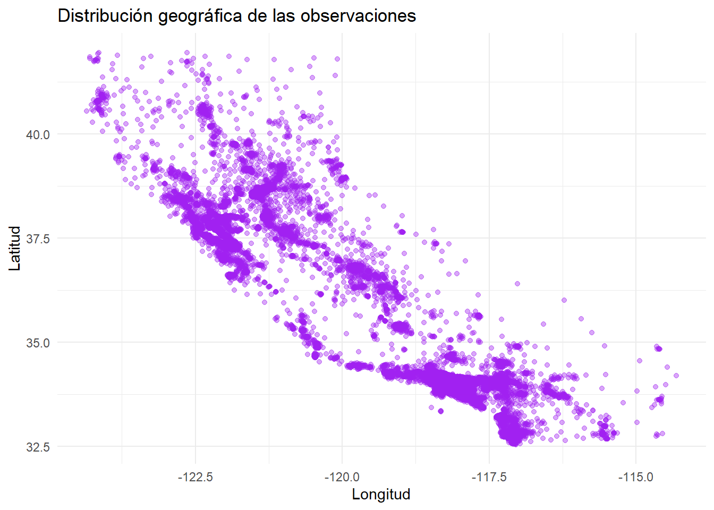
Interpretación:
A diferencia de las relaciones anteriores, aquí no se observa una relación lineal, sino un patrón geográfico: los puntos se agrupan en varias zonas densas conectadas por una tendencia diagonal descendente, formando una silueta particular. Dado el contexto del dataset (variables asociadas a viviendas, ingresos y proximidad al océano), esta forma coincide con el contorno del estado de California, lo cual resulta un dato curioso que confirma el origen geográfico de las observaciones. A diferencia de las demás variables analizadas, longitude y latitude no permiten crear una nueva variable combinada, ya que no miden lo mismo ni representan magnitudes que puedan resumirse en una proporción; su relación es únicamente de tipo espacial.
5. longitude vs housing_median_age
ggplot(df, aes(x = longitude, y = housing_median_age)) +
geom_point(alpha = 0.4, color = "steelblue") +
labs(title = "Relación entre longitude y housing_median_age",
x = "Longitud", y = "Edad media de las viviendas") +
theme_minimal()
Interpretación:
Se observa una distribución bastante dispersa de la edad media de las viviendas a lo largo de la longitud, aunque se distinguen algunas zonas con una concentración mucho mayor de observaciones. Destacan principalmente las regiones alrededor de las longitudes -122 a -121 y -118 a -117, donde se forman nubes de puntos muy densas y se presenta una amplia variedad de edades, desde valores bajos hasta viviendas con edades cercanas a los 50 años. También se observa una concentración importante de puntos alrededor de edades entre 10 y 35 años, especialmente en estas zonas. Hacia longitudes cercanas a -115, la cantidad de observaciones disminuye considerablemente y los puntos aparecen más separados. No se aprecia una relación lineal claramente definida entre la longitud y la edad media de las viviendas, sino diferentes patrones de concentración según la zona de longitud.
6. longitude vs total_rooms
ggplot(df, aes(x = longitude, y = total_rooms)) +
geom_point(alpha = 0.4, color = "darkorange") +
labs(title = "Relación entre longitude y total_rooms",
x = "Longitud", y = "Total de cuartos") +
theme_minimal()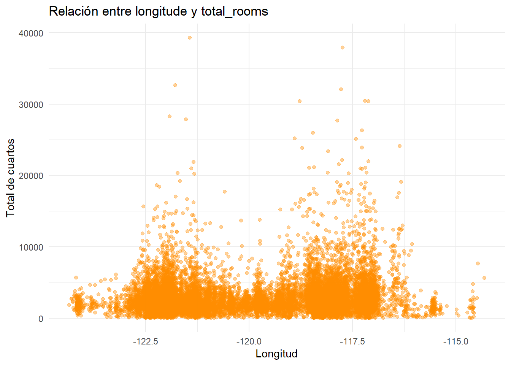
Interpretación:
Se observa una concentración muy marcada de los puntos en valores bajos y medios del total de cuartos a lo largo de prácticamente todo el rango de longitud. Las mayores concentraciones se encuentran principalmente alrededor de las longitudes -122 a -121 y -118 a -116, donde también se presenta una mayor dispersión vertical. En estas zonas aparecen numerosos valores superiores a 5.000 cuartos y varios puntos que superan los 10.000, llegando algunos a valores cercanos a 30.000–40.000 cuartos. También se observan varios valores alejados de la nube principal, especialmente en las zonas de mayor concentración. Hacia longitudes cercanas a -115, la cantidad de observaciones disminuye considerablemente y los puntos se concentran principalmente en valores bajos del número de cuartos. No se aprecia una relación lineal claramente definida entre la longitud y el total de cuartos, sino diferentes niveles de concentración y dispersión según la zona de longitud.
7. longitude vs total_bedrooms
ggplot(df, aes(x = longitude, y = total_bedrooms)) +
geom_point(alpha = 0.4, color = "darkgreen") +
labs(title = "Relación entre longitude y total_bedrooms",
x = "Longitud", y = "Total de dormitorios") +
theme_minimal()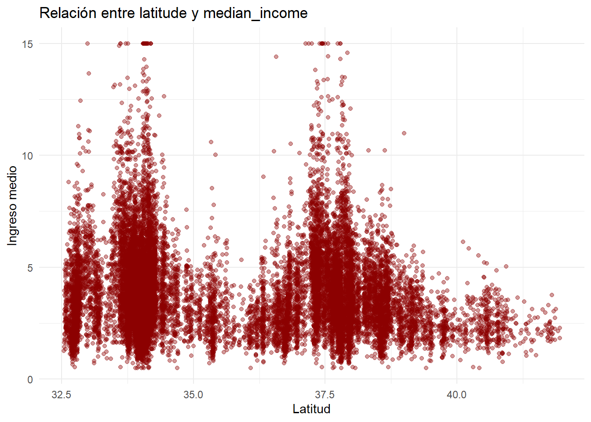
Interpretación:
Se observa una concentración muy marcada de los puntos en valores bajos del total de dormitorios a lo largo de prácticamente todo el rango de longitud. Las mayores concentraciones se encuentran principalmente alrededor de las longitudes -122 a -121 y -118 a -116, donde también se presenta una mayor dispersión vertical. En estas zonas aparecen numerosos valores por encima de 1.000 dormitorios y varios puntos que superan los 2.000, llegando algunos a valores superiores a 4.000. También se identifican algunos valores alejados de la nube principal, especialmente alrededor de las longitudes -122 y -118. En cambio, hacia longitudes cercanas a -115, hay muchas menos observaciones y los puntos se concentran principalmente en valores bajos. No se aprecia una relación lineal claramente definida entre ambas variables, sino diferentes niveles de concentración y dispersión según la zona de longitud.
8. longitude vs population
ggplot(df, aes(x = longitude, y = population)) +
geom_point(alpha = 0.4, color = "purple") +
labs(title = "Relación entre longitude y population",
x = "Longitud", y = "Población") +
theme_minimal()
Interpretación:
Se observa una concentración muy marcada de los puntos en valores bajos de población a lo largo de casi todo el rango de longitud. Las mayores concentraciones de observaciones se encuentran principalmente entre las longitudes -122 y -121 y entre -118 y -116, donde también aumenta considerablemente la dispersión vertical. En estas zonas aparecen numerosos valores de población por encima de 5.000 habitantes y varios que superan los 10.000. Además, se identifican algunos valores atípicos muy alejados de la nube principal, incluyendo observaciones por encima de 20.000 y una que supera los 30.000 habitantes. Hacia longitudes cercanas a -115, la cantidad de observaciones disminuye notablemente y los puntos se concentran principalmente en valores bajos de población. No se aprecia una relación lineal simple entre longitud y población, sino diferentes niveles de concentración y dispersión según la zona de longitud.
9. longitude vs households
ggplot(df, aes(x = longitude, y = households)) +
geom_point(alpha = 0.4, color = "brown") +
labs(title = "Relación entre longitude y households",
x = "Longitud", y = "Número de hogares") +
theme_minimal()
Interpretación:
Se observa una concentración muy marcada de los puntos en valores bajos del número de hogares a lo largo de la mayor parte del rango de longitud. Las zonas alrededor de -122 a -121 y -118 a -116 presentan las nubes de puntos más densas y también una mayor dispersión vertical. En estas regiones aparecen numerosos valores por encima de 2.000 hogares y algunos puntos que superan los 4.000, llegando en ciertos casos a valores cercanos a 6.000. En cambio, hacia longitudes cercanas a -115, la cantidad de observaciones disminuye considerablemente y los puntos se concentran principalmente en valores bajos de hogares. No se observa una relación lineal simple entre ambas variables, sino diferentes niveles de concentración y dispersión según la zona de longitud.
10. longitude vs median_income
ggplot(df, aes(x = longitude, y = median_income)) +
geom_point(alpha = 0.4, color = "darkred") +
labs(title = "Relación entre longitude y median_income",
x = "Longitud", y = "Ingreso medio") +
theme_minimal()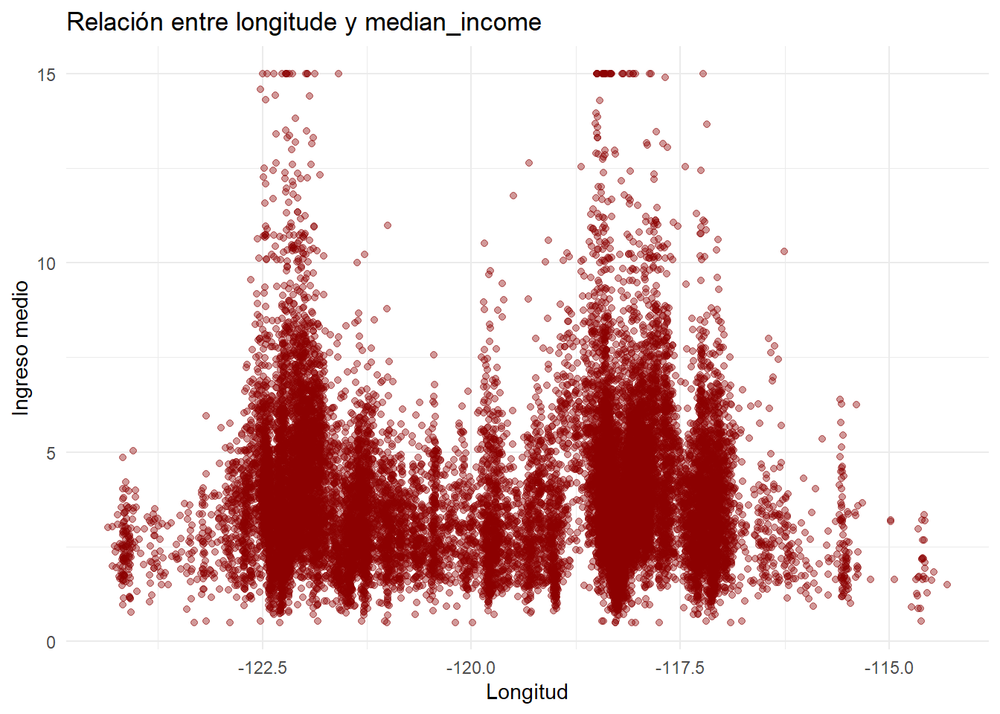
Interpretación:
Se observa una distribución bastante dispersa del ingreso medio a lo largo de la longitud, aunque se distinguen algunas zonas con una concentración mucho mayor de observaciones. Destacan especialmente las regiones alrededor de las longitudes -122 a -121 y -118 a -116, donde se forman nubes de puntos más densas y también aparece una mayor cantidad de valores altos de ingreso. En estas zonas se observan varios puntos por encima de 10, llegando algunos hasta aproximadamente 15. En cambio, hacia longitudes cercanas a -115, los puntos se concentran principalmente en valores bajos de ingreso y la cantidad de observaciones es mucho menor. No se aprecia una relación lineal simple entre ambas variables, sino diferentes patrones de concentración dependiendo de la zona de longitud.
11. latitude vs housing_median_age
ggplot(df, aes(x = latitude, y = housing_median_age)) +
geom_point(alpha = 0.4, color = "steelblue") +
labs(title = "Relación entre latitude y housing_median_age",
x = "Latitud", y = "Edad media de las viviendas") +
theme_minimal()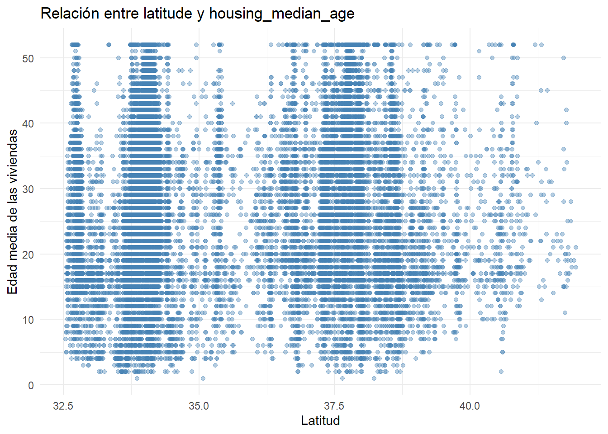
Interpretación:
Se observa una distribución bastante dispersa de la edad media de las viviendas a lo largo de la latitud, sin una tendencia lineal claramente definida. Alrededor de las latitudes 33–34 se concentra una gran cantidad de observaciones, especialmente en edades bajas y medias, aunque también aparecen viviendas con edades cercanas a los 50 años. Entre aproximadamente 37 y 39 se encuentra otra concentración importante de puntos, con una dispersión vertical todavía mayor y una presencia notable de viviendas con edades superiores a 40 años. Hacia latitudes cercanas a 40 y superiores, la cantidad de observaciones disminuye considerablemente y los puntos se encuentran más dispersos. Además, se observa una concentración de puntos en edades cercanas a los 52 años en varias zonas del gráfico, formando una franja horizontal bastante visible.
12. latitude vs total_rooms
ggplot(df, aes(x = latitude, y = total_rooms)) +
geom_point(alpha = 0.4, color = "darkorange") +
labs(title = "Relación entre latitude y total_rooms",
x = "Latitud", y = "Total de cuartos") +
theme_minimal()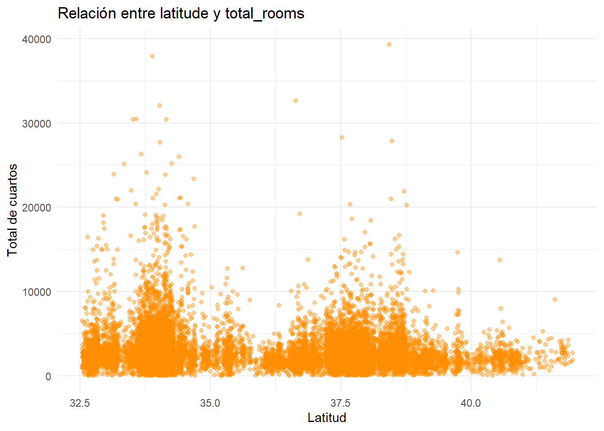
Interpretación:
Se observa una concentración muy marcada de los puntos en valores bajos y medios del total de cuartos, mientras que los valores altos aparecen con mucha menor frecuencia. Las mayores concentraciones de observaciones se encuentran alrededor de las latitudes 33–34 y 37–39, donde también se presenta una mayor dispersión vertical. En estas zonas aparecen varios valores alejados de la nube principal, con algunos puntos que superan los 10.000 cuartos y llegan incluso a valores cercanos a 30.000–40.000. En cambio, hacia latitudes cercanas a 40 y superiores, los puntos se concentran principalmente en valores bajos y la dispersión es menor. No se observa una relación lineal claramente definida entre la latitud y el número de cuartos, sino diferentes niveles de concentración dependiendo de la zona de latitud.
13. latitude vs total_bedrooms
ggplot(df, aes(x = latitude, y = total_bedrooms)) +
geom_point(alpha = 0.4, color = "darkgreen") +
labs(title = "Relación entre latitude y total_bedrooms",
x = "Latitud", y = "Total de dormitorios") +
theme_minimal()
Interpretación:
Se observa una concentración muy marcada de los puntos en valores bajos del total de dormitorios, mientras que los valores más altos aparecen con mucha menor frecuencia. Las zonas alrededor de las latitudes 33–34 y 37–39 presentan una mayor densidad de observaciones y también una dispersión vertical más amplia. En estas zonas se identifican varios valores alejados de la nube principal, con algunos puntos que superan los 2.000 dormitorios y alcanzan valores superiores a 4.000. En cambio, a partir de latitudes cercanas a 40, los puntos se concentran principalmente en valores bajos y la dispersión disminuye. No se observa una relación lineal claramente definida entre ambas variables, sino diferentes niveles de concentración según la latitud.
14. latitude vs population
ggplot(df, aes(x = latitude, y = population)) +
geom_point(alpha = 0.4, color = "purple") +
labs(title = "Relación entre latitude y population",
x = "Latitud", y = "Población") +
theme_minimal()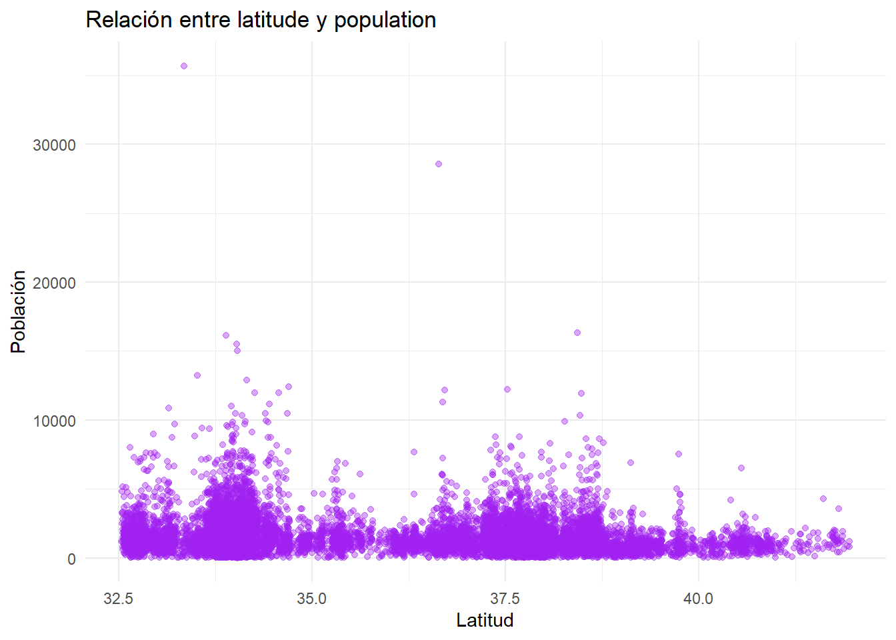
Interpretación:
Se observa una concentración muy marcada de los puntos en valores bajos de población a lo largo de todo el rango de latitud. Las mayores concentraciones se encuentran principalmente alrededor de las latitudes 33–34 y 37–39, donde también se presenta una mayor dispersión y aparecen más observaciones con poblaciones elevadas. En estas zonas se identifican varios valores alejados de la nube principal, incluyendo algunos que superan los 10.000 habitantes y unos pocos que alcanzan valores considerablemente mayores. A partir de latitudes cercanas a 40, los puntos se concentran cada vez más en valores bajos de población y la dispersión disminuye. No se aprecia una relación lineal simple entre la latitud y la población, sino diferentes patrones de concentración según la zona de latitud.
15. latitude vs households
ggplot(df, aes(x = latitude, y = households)) +
geom_point(alpha = 0.4, color = "brown") +
labs(title = "Relación entre latitude y households",
x = "Latitud", y = "Número de hogares") +
theme_minimal()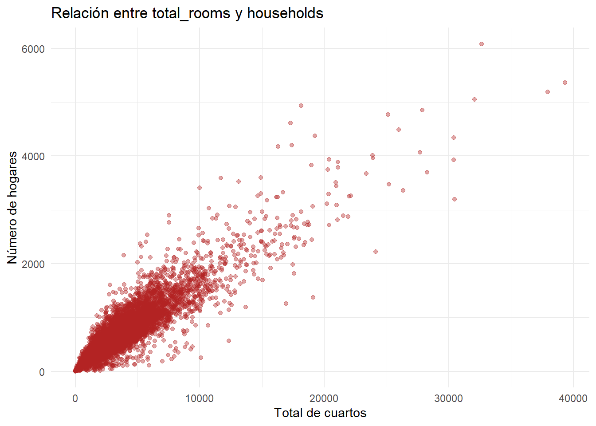
Interpretación:
Se observa una concentración muy marcada de los puntos en valores bajos del número de hogares a lo largo de prácticamente todo el rango de latitud. Las mayores concentraciones de observaciones se encuentran alrededor de las latitudes 33–34 y 37–38, donde también se aprecia una mayor dispersión vertical. En estas zonas aparecen varios valores alejados de la nube principal, con algunos hogares que superan ampliamente los 2.000 y llegan a valores superiores a 4.000. En cambio, hacia latitudes cercanas a 40–41, los puntos se concentran mucho más cerca de los valores bajos y la dispersión es menor. No se aprecia una relación lineal simple entre ambas variables, sino diferentes concentraciones dependiendo de la zona de latitud..
16. latitude vs median_income
ggplot(df, aes(x = latitude, y = median_income)) +
geom_point(alpha = 0.4, color = "darkred") +
labs(title = "Relación entre latitude y median_income",
x = "Latitud", y = "Ingreso medio") +
theme_minimal()
Interpretación:
Se observa una distribución bastante variable del ingreso medio a lo largo de la latitud, con una concentración importante de puntos entre valores de ingreso aproximadamente entre 2 y 6. La dispersión cambia notablemente según la zona de latitud: alrededor de 33–34 y 37–38 se observan nubes mucho más densas y una mayor presencia de valores altos de ingreso, llegando algunos puntos hasta valores cercanos a 15. En cambio, hacia latitudes superiores a aproximadamente 39, los puntos se concentran principalmente en valores bajos de ingreso y presentan una dispersión menor. Por lo tanto, no se observa una relación lineal simple, sino diferentes concentraciones de puntos dependiendo de la zona de latitud.
17. housing_median_age vs total_rooms
ggplot(df, aes(x = housing_median_age, y = total_rooms)) +
geom_point(alpha = 0.4, color = "steelblue") +
labs(title = "Relación entre housing_median_age y total_rooms",
x = "Edad media de las viviendas", y = "Total de cuartos") +
theme_minimal()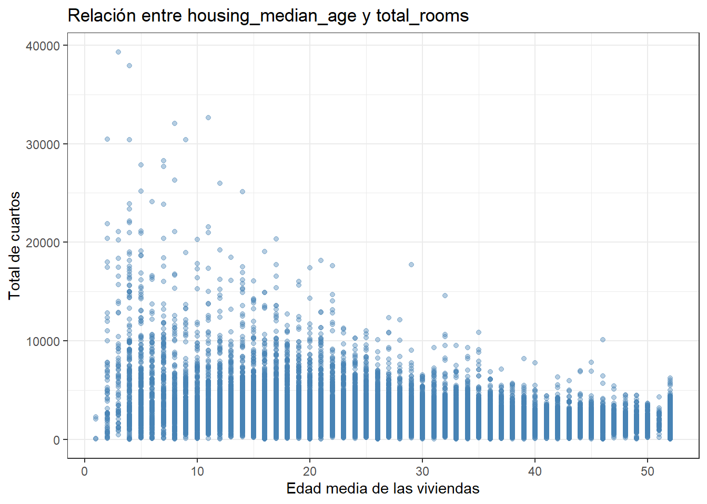
Interpretación:
Se observa una concentración muy marcada de los puntos en valores bajos y medios del total de cuartos para prácticamente todas las edades de las viviendas. En las viviendas más jóvenes, especialmente entre aproximadamente 2 y 20 años, se presenta una dispersión mucho mayor, con numerosos valores por encima de 10.000 cuartos y algunos puntos que alcanzan valores cercanos a 40.000. A medida que aumenta la edad de las viviendas, la nube de puntos se concentra progresivamente en valores más bajos del total de cuartos y disminuye la presencia de valores extremos. En las viviendas con edades superiores a aproximadamente 35 años, la mayoría de los puntos se mantiene por debajo de unos 6.000 cuartos. En conjunto, se aprecia una tendencia visual hacia una menor dispersión y menores valores de total_rooms a medida que aumenta la edad de las viviendas.
18. housing_median_age vs total_bedrooms
ggplot(df, aes(x = housing_median_age, y = total_bedrooms)) +
geom_point(alpha = 0.4, color = "darkgreen") +
labs(title = "Relación entre housing_median_age y total_bedrooms",
x = "Edad media de las viviendas", y = "Total de dormitorios") +
theme_minimal()
Interpretación.
Se observa una concentración muy marcada de los puntos en valores bajos y medios del total de dormitorios para prácticamente todas las edades de las viviendas. En las viviendas más jóvenes, especialmente entre aproximadamente 2 y 20 años, se presenta una mayor dispersión vertical y aparecen numerosos valores superiores a 2.000 dormitorios, con algunos puntos que superan los 4.000 y alcanzan valores cercanos a 6.500. A medida que aumenta la edad de las viviendas, los puntos tienden a concentrarse progresivamente en valores más bajos del total de dormitorios y disminuyen los valores extremos. A partir de aproximadamente 35 años, la mayor parte de las observaciones se encuentra por debajo de unos 1.500 dormitorios. En conjunto, se aprecia visualmente una reducción de la dispersión y de los valores máximos de total_bedrooms conforme aumenta la edad media de las viviendas.
19. housing_median_age vs population
ggplot(df, aes(x = housing_median_age, y = population)) +
geom_point(alpha = 0.4, color = "purple") +
labs(title = "Relación entre housing_median_age y population",
x = "Edad media de las viviendas", y = "Población") +
theme_minimal()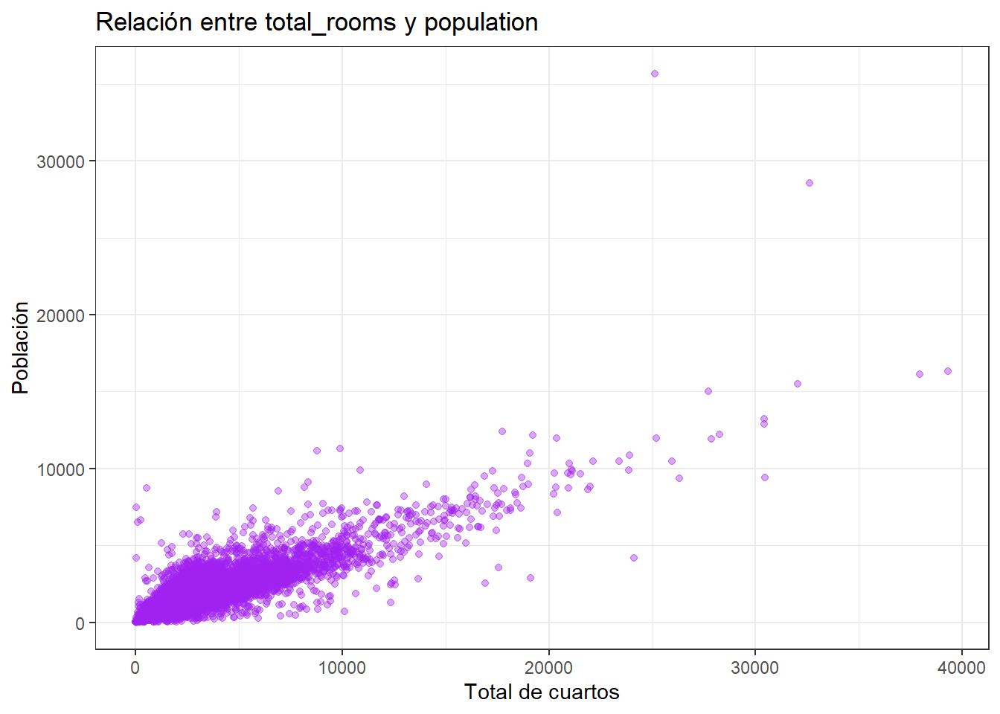
Interpretación:
Se observa una concentración muy marcada de los puntos en valores bajos de población para prácticamente todas las edades de las viviendas. En las viviendas más jóvenes, especialmente entre aproximadamente 2 y 20 años, se presenta una mayor dispersión vertical y aparecen varios valores de población superiores a 10.000 habitantes, incluyendo algunos puntos que alcanzan valores cercanos a 30.000 y uno que supera los 35.000. A medida que aumenta la edad de las viviendas, la nube se concentra progresivamente en valores más bajos de población y disminuyen los valores extremos. A partir de aproximadamente 35 años, la mayoría de los puntos se encuentra por debajo de unos 5.000 habitantes. En conjunto, se aprecia visualmente una reducción de la dispersión y de los valores máximos de population conforme aumenta la edad media de las viviendas.
20. housing_median_age vs households
ggplot(df, aes(x = housing_median_age, y = households)) +
geom_point(alpha = 0.4, color = "firebrick") +
labs(title = "Relación entre housing_median_age y households",
x = "Edad media de las viviendas", y = "Número de hogares") +
theme_minimal()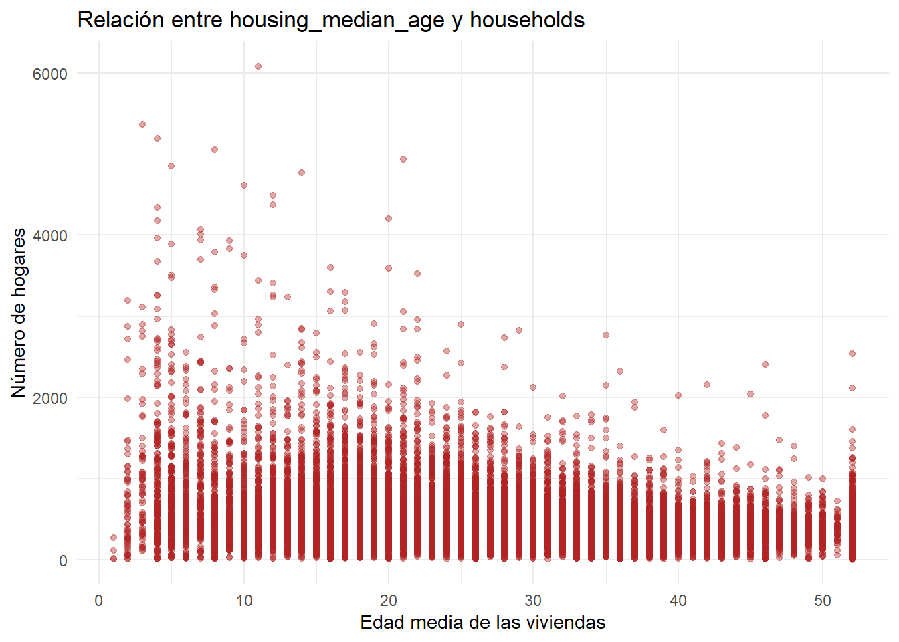
Interpretación
Se observa una concentración muy marcada de los puntos en valores bajos del número de hogares para prácticamente todas las edades de las viviendas. En las viviendas más jóvenes, especialmente entre aproximadamente 3 y 20 años, se presenta una mayor dispersión vertical, con varios valores por encima de 2.000 hogares y algunos puntos que alcanzan valores cercanos a 6.000. A medida que aumenta la edad de las viviendas, los puntos tienden a concentrarse en valores más bajos y disminuye la presencia de valores extremos. A partir de aproximadamente 35 años, la mayor parte de las observaciones se encuentra por debajo de unos 1.500 hogares, aunque todavía aparecen algunos valores aislados por encima de ese rango. En conjunto, se aprecia visualmente una reducción de la dispersión y de los valores máximos de households conforme aumenta la edad media de las viviendas.
21. housing_median_age vs median_income
ggplot(df, aes(x = housing_median_age, y = median_income)) +
geom_point(alpha = 0.4, color = "darkred") +
labs(title = "Relación entre housing_median_age y median_income",
x = "Edad media de las viviendas", y = "Ingreso medio") +
theme_minimal()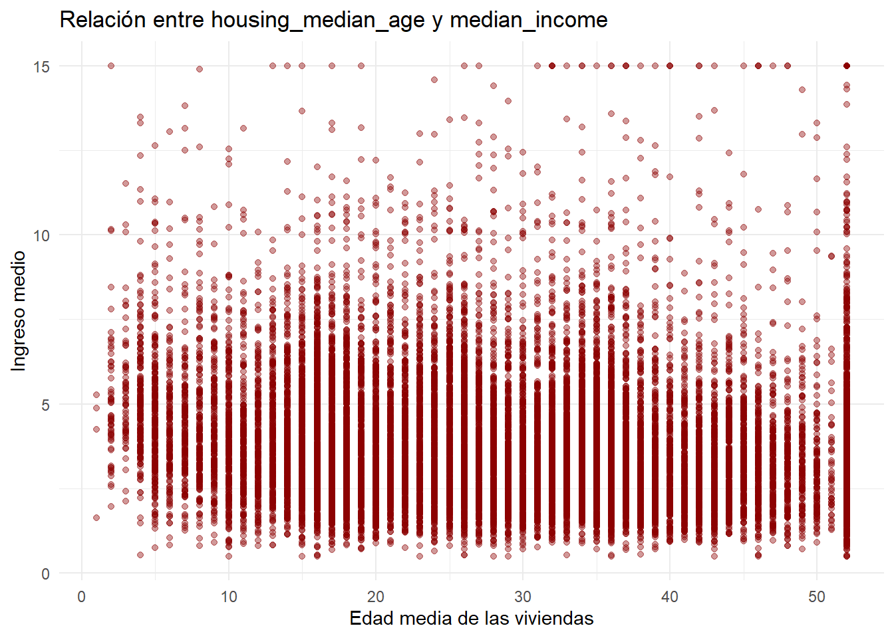
Interpretación:
Se observa una distribución bastante amplia del ingreso medio para prácticamente todas las edades de las viviendas, sin una tendencia lineal claramente definida. La mayor concentración de puntos se encuentra aproximadamente entre 1 y 7 de ingreso, y este rango se mantiene a lo largo de casi todo el eje de edad. En las viviendas más jóvenes se aprecia una mayor dispersión, con varios valores superiores a 10 y algunos que alcanzan el valor máximo cercano a 15. Estos valores altos también aparecen en edades intermedias y avanzadas, por lo que no están concentrados en una sola zona. En las viviendas de mayor edad, especialmente por encima de aproximadamente 40 años, la nube se concentra algo más en valores bajos y medios, aunque continúan apareciendo algunos valores elevados. En general, el gráfico muestra una distribución bastante dispersa del ingreso medio según la edad de las viviendas, sin un patrón lineal evidente.
22. total_rooms vs total_bedrooms
ggplot(df, aes(x = total_rooms, y = total_bedrooms)) +
geom_point(alpha = 0.4, color = "darkgreen") +
labs(title = "Relación entre total_rooms y total_bedrooms",
x = "Total de cuartos", y = "Total de dormitorios") +
theme_minimal()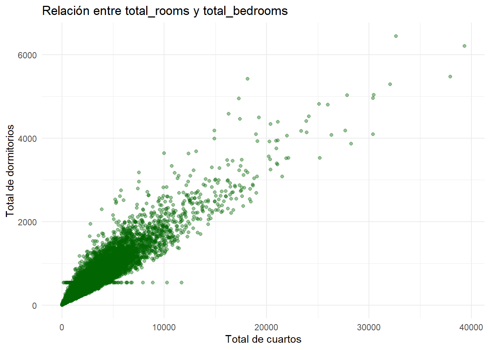
Interpretación:
Se observa una relación positiva muy marcada entre el total de cuartos y el total de dormitorios. La mayor concentración de puntos se encuentra en valores bajos y medios de ambas variables, formando una nube que asciende claramente a medida que aumenta el número de cuartos. Hasta aproximadamente 10.000 cuartos, los puntos se concentran principalmente por debajo de unos 2.000 dormitorios, aunque la dispersión comienza a aumentar progresivamente. Para valores superiores a 10.000 cuartos, la cantidad de observaciones disminuye y la dispersión se hace más evidente, con varios puntos que superan los 3.000 dormitorios y algunos que alcanzan valores cercanos a 6.500. También se observan algunos puntos alejados de la nube principal, especialmente en los valores más altos de ambas variables. En general, la nube mantiene una tendencia ascendente bastante clara, aunque presenta mayor dispersión a medida que aumentan los valores.
23. total_rooms vs population
ggplot(df, aes(x = total_rooms, y = population)) +
geom_point(alpha = 0.4, color = "purple") +
labs(title = "Relación entre total_rooms y population",
x = "Total de cuartos", y = "Población") +
theme_minimal()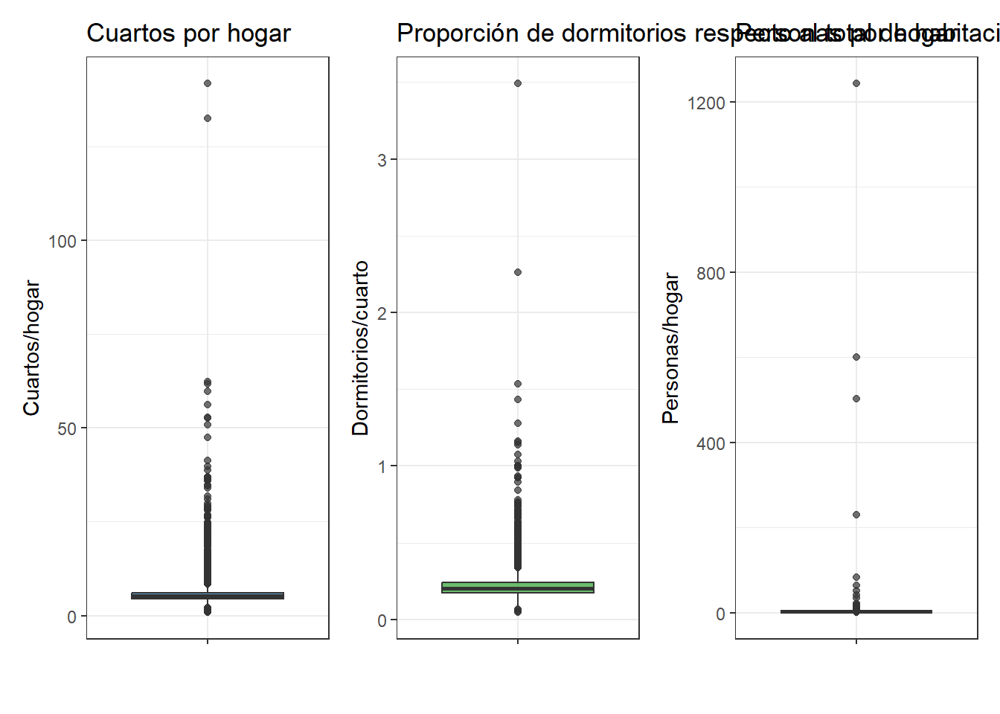
Interpretación:
Se observa una relación positiva bastante clara entre el total de cuartos y la población: a medida que aumenta el número de cuartos, la población tiende a aumentar. La mayor concentración de puntos se encuentra en valores bajos y medios, principalmente por debajo de 10.000 cuartos y 8.000 habitantes, formando una nube con tendencia ascendente. A medida que el número de cuartos aumenta, la cantidad de observaciones disminuye y la dispersión se hace más notoria. Se identifican varios valores alejados de la nube principal, especialmente para valores superiores a 20.000 cuartos, donde aparecen poblaciones que superan los 10.000 habitantes y algunos puntos que llegan a valores cercanos a 30.000–35.000. En general, la tendencia ascendente es visible, aunque la dispersión aumenta en los valores más altos.
24. total_rooms vs households
ggplot(df, aes(x = total_rooms, y = households)) +
geom_point(alpha = 0.4, color = "firebrick") +
labs(title = "Relación entre total_rooms y households",
x = "Total de cuartos", y = "Número de hogares") +
theme_minimal()
Interpretación:
Se observa una relación positiva entre el número total de cuartos y el número de hogares. La mayor concentración de puntos se encuentra en valores relativamente bajos, principalmente por debajo de los 10.000 cuartos y 2.000 hogares, formando una nube con una tendencia ascendente bastante marcada. A medida que aumenta el número de cuartos, también tiende a aumentar el número de hogares, aunque la dispersión de los puntos se hace más amplia. En los valores más altos aparecen varios puntos alejados de la concentración principal, especialmente por encima de 20.000 cuartos y 3.000 hogares, donde los datos son menos frecuentes. En general, el patrón ascendente es bastante visible y los valores extremos se presentan principalmente en la parte derecha del gráfico.
25. total_rooms vs median_income
ggplot(data, aes(x = total_rooms, y = median_income)) +
geom_point(alpha = 0.4, color = "darkred") +
labs(
title = "Relación entre total_rooms y median_income",
x = "Total de cuartos",
y = "Ingreso medio"
) +
theme_bw()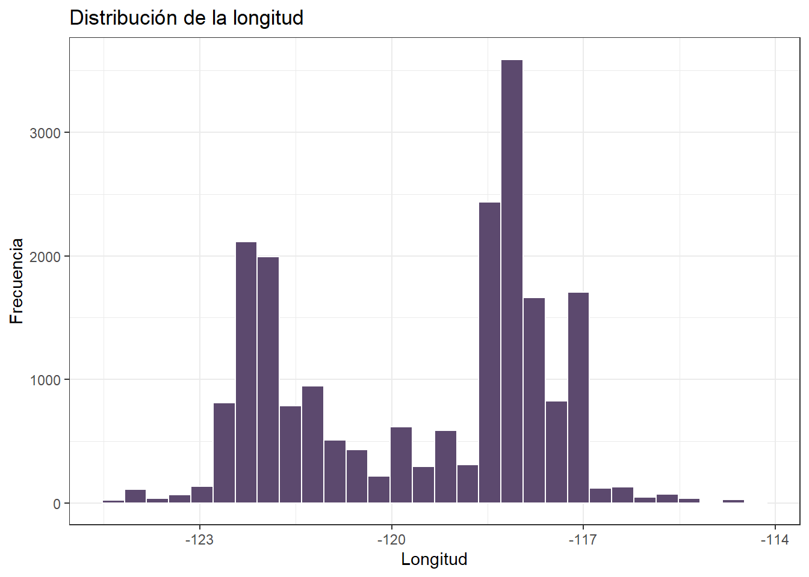
Interpretación:
Se observa una relación negativa entre ambas variables, aunque con una dispersión considerable. La mayor concentración de puntos se encuentra en valores bajos de total_rooms, principalmente por debajo de 10.000 cuartos, donde los ingresos medios presentan una amplia variedad de valores, aproximadamente entre 1 y 8. A medida que aumenta el número de cuartos, los puntos tienden a concentrarse en niveles de ingreso más bajos y son cada vez menos numerosos. Los valores de ingreso más altos, que alcanzan aproximadamente 15, aparecen principalmente en zonas con un número relativamente bajo de cuartos. En la parte derecha del gráfico se observan pocos puntos y una mayor concentración alrededor de ingresos medios bajos, junto con algunos valores atípicos de ingreso.
26. total_rooms vs housing_median_age
ggplot(data, aes(x = housing_median_age, y = total_rooms)) +
geom_point(alpha = 0.4, color = "steelblue") +
labs(
title = "Relación entre housing_median_age y total_rooms",
x = "Edad media de las viviendas",
y = "Total de cuartos"
) +
theme_bw()
Interpretación:
Se observa una tendencia descendente entre ambas variables. En las viviendas con menor edad media, especialmente entre aproximadamente 3 y 20 años, los valores de total_rooms presentan una dispersión mucho mayor, incluyendo algunos valores que superan los 20.000 cuartos y llegan hasta cerca de 40.000. A medida que aumenta la edad media de las viviendas, los puntos tienden a concentrarse en valores más bajos de total_rooms y la dispersión disminuye notablemente. En las viviendas con edades superiores a aproximadamente 30 años, la mayoría de los valores se mantiene por debajo de 10.000 cuartos, mientras que entre 40 y 52 años se observa una concentración todavía mayor en valores bajos. También se identifican algunos valores atípicos, principalmente entre las viviendas de menor edad media.
27.total_rooms vs total_bedrooms
ggplot(data, aes(x = total_rooms, y = total_bedrooms)) +
geom_point(alpha = 0.4, color = "darkgreen") +
labs(
title = "Relación entre total_rooms y total_bedrooms",
x = "Total de cuartos",
y = "Total de dormitorios"
) +
theme_bw()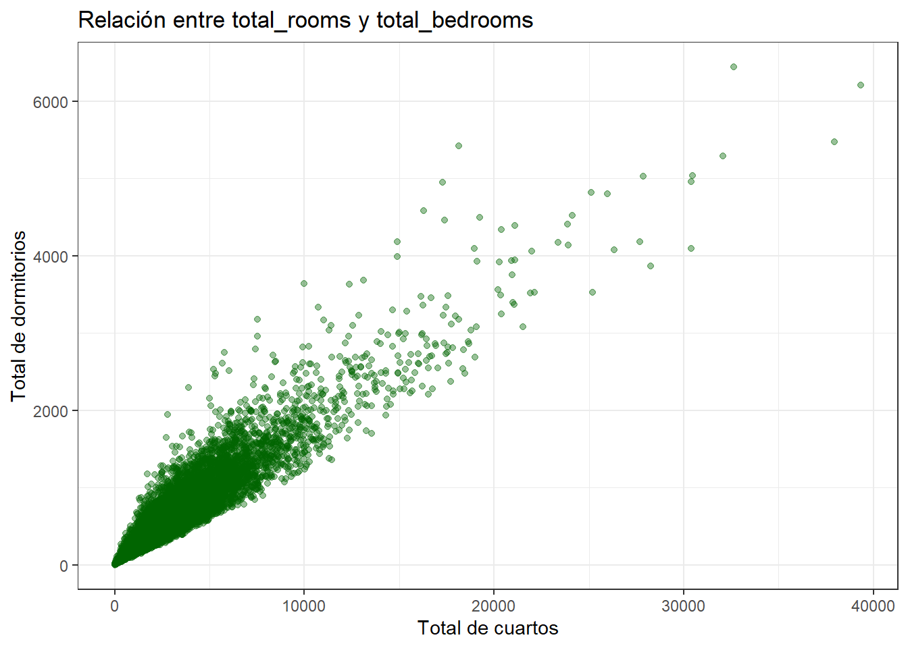
Interpretación:
Se observa una relación positiva muy marcada entre ambas variables. La mayor concentración de puntos se encuentra en valores bajos, principalmente por debajo de 10.000 cuartos y 2.000 dormitorios. A medida que aumenta el número de cuartos, también tiende a aumentar el número de dormitorios, formando una nube de puntos con una clara tendencia ascendente. La dispersión se hace un poco mayor en los valores más altos de total_rooms, donde aparecen observaciones más separadas del grupo principal. También se identifican algunos valores atípicos en la parte superior derecha, con más de 20.000 cuartos y varios miles de dormitorios. En general, los puntos siguen una tendencia ascendente bastante definida.
28. total_rooms vs population
ggplot(data, aes(x = total_rooms, y = population)) +
geom_point(alpha = 0.4, color = "purple") +
labs(
title = "Relación entre total_rooms y population",
x = "Total de cuartos",
y = "Población"
) +
theme_bw()
Interpretación:
Se observa una relación positiva entre ambas variables: a medida que aumenta el número de cuartos, la población tiende a aumentar. La mayor concentración de puntos se encuentra en valores bajos, principalmente por debajo de 10.000 cuartos y de 5.000 habitantes, formando una nube con tendencia ascendente. A medida que aumenta el número de cuartos, los puntos se vuelven menos numerosos y presentan una mayor dispersión. En los valores más altos aparecen varias observaciones alejadas del grupo principal, incluyendo algunos casos con más de 10.000 habitantes y un valor extremo cercano a 35.000 habitantes. En general, la tendencia ascendente se mantiene, aunque la dispersión aumenta conforme crece el número de cuartos.
Creación de nuevas variables
A partir de las relaciones identificadas en los gráficos anteriores, se observó que total_rooms, total_bedrooms, population y households están fuertemente relacionadas entre sí, ya que en conjunto reflejan el tamaño de las viviendas de cada zona. Debido a esto, se decidió construir variables nuevas que expresen esta información en forma de proporciones, en lugar de mantener los valores totales por separado:
df <- df %>%
mutate(
rooms_per_household = total_rooms / households,
bedrooms_per_room = total_bedrooms / total_rooms,
population_per_household = population / households
) %>%
select(-total_rooms, -total_bedrooms, -population)rooms_per_household: número promedio de cuartos por hogar.
bedrooms_per_room: proporción de dormitorios respecto al total de cuartos.
population_per_household: número promedio de personas por hogar.
Estas variables permiten resumir la información de las cuatro variables originales en una forma más representativa, reduciendo la redundancia entre ellas.
Chapter 3 EDA con las nuevas variables
Veamos las 5 primeras filas
## longitude latitude housing_median_age households median_income median_house_value ocean_proximity
## 1 -122.23 37.88 41 126 8.3252 452600 NEAR BAY
## 2 -122.22 37.86 21 1138 8.3014 358500 NEAR BAY
## 3 -122.24 37.85 52 177 7.2574 352100 NEAR BAY
## 4 -122.25 37.85 52 219 5.6431 341300 NEAR BAY
## 5 -122.25 37.85 52 259 3.8462 342200 NEAR BAY
## rooms_per_household bedrooms_per_room population_per_household
## 1 6.984127 0.1465909 2.555556
## 2 6.238137 0.1557966 2.109842
## 3 8.288136 0.1295160 2.802260
## 4 5.817352 0.1844584 2.547945
## 5 6.281853 0.1720959 2.181467Podemos ver nuestras nuevas tres variables y sus primeras 5 filas.
Estructura de los datos
## 'data.frame': 20640 obs. of 10 variables:
## $ longitude : num -122 -122 -122 -122 -122 ...
## $ latitude : num 37.9 37.9 37.9 37.9 37.9 ...
## $ housing_median_age : num 41 21 52 52 52 52 52 52 42 52 ...
## $ households : num 126 1138 177 219 259 ...
## $ median_income : num 8.33 8.3 7.26 5.64 3.85 ...
## $ median_house_value : num 452600 358500 352100 341300 342200 ...
## $ ocean_proximity : Factor w/ 5 levels "<1H OCEAN","INLAND",..: 4 4 4 4 4 4 4 4 4 4 ...
## $ rooms_per_household : num 6.98 6.24 8.29 5.82 6.28 ...
## $ bedrooms_per_room : num 0.147 0.156 0.13 0.184 0.172 ...
## $ population_per_household: num 2.56 2.11 2.8 2.55 2.18 ...Análisis exploratorio de median_house_value (Target)
Realicemos el resumen estadístico de la variable
df %>% summarise (n=length(median_house_value),
media=mean(median_house_value),
sd=sd(median_house_value),
mediana = median(median_house_value),
RIC = IQR(median_house_value),
Q1=quantile(median_house_value,0.25),
Q3=quantile(median_house_value,0.75),
minimo=min(median_house_value),
maximo=max(median_house_value),
asimetria=skewness(median_house_value),
curtosis=kurtosis(median_house_value))## n media sd mediana RIC Q1 Q3 minimo maximo asimetria curtosis
## 1 20640 206855.8 115395.6 179700 145125 119600 264725 14999 500001 0.9776922 3.3275Conclusiones
La variable median_house_value presenta un valor medio de 206.855,8 USD y una mediana de 179.700 USD. La media es superior a la mediana, lo que, junto con un coeficiente de asimetría positivo de 0,978, indica que la distribución presenta un sesgo hacia la derecha. El 50 % central de las observaciones se encuentra entre 119.600 USD y 264.725 USD, con un rango intercuartílico de 145.125 USD. Los valores oscilan entre 14.999 USD y 500.001 USD, evidenciando una amplitud considerable. Además, la desviación estándar de 115.395,6 USD indica una dispersión importante de los valores respecto a la media. La curtosis de 3,33 sugiere colas ligeramente más pesadas que las de una distribución normal.
df %>%
ggplot(aes(x=median_house_value)) +
geom_histogram(aes(y=after_stat(density)),
binwidth = 25000,
fill = "#60cc88",
color = "white",
alpha = 0.6)+
geom_density(color = "darkgreen", linewidth = 1.2)+
labs (title = 'Distribución del valor medio de las viviendas',
x = 'valor medio de la casa (USD)',
y = 'densidad')+
theme_bw()
Conclusiones:
El histograma y la curva de densidad muestran que los valores medios de las viviendas se concentran principalmente entre aproximadamente 100.000 dólares y 200.000 dólares. La distribución presenta una cola hacia la derecha, con valores que se extienden hasta aproximadamente 500.000 dólares,lo que evidencia una asimetría positiva, consistente con el valor de asimetría obtenido anteriormente (0,978). Además, se observa una concentración de observaciones en el límite superior cercano a 500.000 dólares.
df %>%
ggplot(aes(x= "", y = median_house_value))+
geom_boxplot(fill = "#9a74a6" , color = "black",
outlier.color = 'darkred')+
stat_summary(fun = mean, geom = 'point', shape = 20,
size = 3, color = 'darkgreen') +
theme_bw()
Interpretación: El diagrama de caja muestra que el valor medio de las viviendas tiene una mediana de aproximadamente 179.700 USD, mientras que el 50 % central de los datos se encuentra entre 119.600 y 264.725 USD. Se observan valores atípicos cercanos a 500.000 USD, y la media es superior a la mediana, lo que evidencia una distribución sesgada hacia la derecha.
3.1 Análisis de variables independientes transformdas (Características)
df %>%
select(where(is.numeric), -median_house_value) %>%
pivot_longer(
cols = everything(),
names_to = 'variable',
values_to = 'valor'
) %>%
group_by(variable) %>%
summarise(n=length(valor),
media=mean(valor),
sd=sd(valor),
mediana = median(valor),
RIC = IQR(valor),
Q1=quantile(valor,0.25),
Q3=quantile(valor,0.75),
minimo=min(valor),
maximo=max(valor),
asimetria=skewness(valor),
curtosis=kurtosis(valor))## # A tibble: 8 × 12
## variable n media sd mediana RIC Q1 Q3 minimo maximo asimetria curtosis
## <chr> <int> <dbl> <dbl> <dbl> <dbl> <dbl> <dbl> <dbl> <dbl> <dbl> <dbl>
## 1 bedrooms_per_room 20640 0.214 6.98e-2 0.203 6.49e-2 0.175 0.240 4.59e-2 3.49 9.28 304.
## 2 households 20640 500. 3.82e+2 409 3.25e+2 280 605 1 e+0 6082 3.41 25.1
## 3 housing_median_age 20640 28.6 1.26e+1 29 1.9 e+1 18 37 1 e+0 52 0.0603 2.20
## 4 latitude 20640 35.6 2.14e+0 34.3 3.78e+0 33.9 37.7 3.25e+1 42.0 0.466 1.88
## 5 longitude 20640 -120. 2.00e+0 -118. 3.79e+0 -122. -118. -1.24e+2 -114. -0.298 1.67
## 6 median_income 20640 3.87 1.90e+0 3.53 2.18e+0 2.56 4.74 5.00e-1 15.0 1.65 7.95
## 7 population_per_hous… 20640 3.07 1.04e+1 2.82 8.53e-1 2.43 3.28 6.92e-1 1243. 97.6 10651.
## 8 rooms_per_household 20640 5.43 2.47e+0 5.23 1.61e+0 4.44 6.05 8.46e-1 142. 20.7 882.Conclusiones: Al analizar el comportamiento de las tres nuevas variables derivadas: La variable rooms_per_household tiene una media de 5,43 cuartos por hogar y una mediana de 5,23, alcanzando un valor máximo de 141,91. Su elevado coeficiente de asimetría (20,70) indica un marcado sesgo hacia la derecha debido a la presencia de valores extremos.
Por su parte, population_per_household presenta una media de 3,07 personas por hogar y una mediana de 2,82. Sin embargo, registra un máximo atípico de 1.243,33, lo que se traduce en una asimetría de 97,63 y una curtosis de 10.651,43, siendo la variable que muestra la concentración más extrema de observaciones atípicas distantes.
Finalmente, bedrooms_per_room presenta un comportamiento más acotado, con una media de 0,21 y una mediana de 0,20. Aunque mantiene asimetría positiva (9,28), sus valores se distribuyen de forma más homogénea al tratarse de una proporción limitada en rango.
Respecto a las variables originales conservadas: households mantiene una asimetría positiva notable (3,41) con presencia de valores atípicos altos; housing_median_age conserva una distribución aproximadamente simétrica (asimetría de 0,06); latitude y longitude presentan asimetrías moderadas (0,47 y -0,30, respectivamente); y median_income sostiene su sesgo hacia valores elevados (asimetría de 1,65).
En conclusión, las nuevas variables derivadas presentan distribuciones fuertemente asimétricas con presencia de valores atípicos severos (especialmente en population_per_household), por lo que se debe considerar el impacto de estos registros extremos en análisis posteriores.
Boxplots de varias variables
p1 <- df %>%
ggplot(aes(x = "", y = rooms_per_household)) +
geom_boxplot(fill = "#1f77b4", alpha = 0.7) +
labs(title = "Cuartos por hogar", y = "Cuartos/hogar", x = "") +
theme_bw()
p2 <- df %>%
ggplot(aes(x = "", y = bedrooms_per_room)) +
geom_boxplot(fill = "#2ca02c", alpha = 0.7) +
labs(title = "Proporción de dormitorios respecto al total de habitaciones", y = "Dormitorios/cuarto", x = "") +
theme_bw()
p3 <- df %>%
ggplot(aes(x = "", y = population_per_household)) +
geom_boxplot(fill = "#d62728", alpha = 0.7) +
labs(title = "Personas por hogar", y = "Personas/hogar", x = "") +
theme_bw()
p1 + p2 + p3
Conclusiones:
Cuartos por hogar: La mayor parte de las observaciones se concentra en un intervalo reducido de valores en la parte inferior del gráfico, ubicándose la caja cerca del rango habitual de viviendas. Se observa una gran cantidad de valores atípicos que se extienden verticalmente hasta alcanzar cerca de 140 cuartos por hogar, evidenciando una marcada asimetría positiva.
Proporción de dormitorios respecto al total de habitaciones: La caja intercuartílica se ubica de forma compacta alrededor de 0,2. Se registran valores atípicos hacia arriba que llegan hasta un poco más de 3, aunque con una dispersión de datos atípicos sustancialmente menor que en las otras dos variables.
Personas por hogar: La mayor parte de los registros se agrupa fuertemente en torno a valores bajos (2 a 3 personas por hogar), comprimiendo la caja visualmente cerca del eje base. Por encima se observa una secuencia de valores atípicos extremadamente distantes que superan las 1.200 personas por hogar, lo que refleja una asimetría hacia la derecha excepcionalmente pronunciada.
Ahora veamos la variable de ocean_proximity
# Tabla de frecuencias para ocean_proximity
tabla_ocean <- df %>%
count(ocean_proximity, name = "Frecuencia") %>%
mutate(
Porcentaje = round(Frecuencia / sum(Frecuencia) * 100, 2),
Variable = "ocean_proximity",
Categoria = as.character(ocean_proximity)
) %>%
select(Variable, Categoria, Frecuencia, Porcentaje)
tabla_ocean## Variable Categoria Frecuencia Porcentaje
## 1 ocean_proximity <1H OCEAN 9136 44.26
## 2 ocean_proximity INLAND 6551 31.74
## 3 ocean_proximity ISLAND 5 0.02
## 4 ocean_proximity NEAR BAY 2290 11.09
## 5 ocean_proximity NEAR OCEAN 2658 12.88Interpretación:
La mayoría de las viviendas se encuentran a menos de una hora del océano (44,26%), seguida de las viviendas ubicadas en zonas del interior (31,74%). Las categorías NEAR OCEAN y NEAR BAY presentan una menor proporción, mientras que ISLAND tiene una representación mínima (0,02%). Por lo tanto, los datos están principalmente concentrados en viviendas cercanas al océano y en zonas interiores.
tabla_ocean_b <- df %>%
count(ocean_proximity, name = "Frecuencia") %>%
mutate(
Porcentaje = round(Frecuencia / sum(Frecuencia) * 100, 1),
Etiqueta = paste0(Frecuencia, " (", Porcentaje, "%)")
)
ggplot(tabla_ocean_b, aes(x = reorder(ocean_proximity, -Frecuencia), y = Frecuencia)) +
geom_col(fill = "#008B8B", width = 0.6) +
geom_text(aes(label = Etiqueta), vjust = -0.5, size = 4.5) +
facet_wrap(~ "Distribución de la variable ocean_proximity") +
scale_y_continuous(expand = expansion(mult = c(0, 0.15))) +
labs(
x = "Proximidad al océano",
y = "Frecuencia (Porcentaje)"
) +
theme_bw(base_size = 12) +
theme(
plot.title = element_blank(),
strip.background = element_rect(fill = "gray80", color = NA),
strip.text = element_text(face = "bold"),
panel.grid.major.x = element_blank())
Veamos gráficos para cada variable restante y su interpretación
Histograma de la variable “longitud”
ggplot(df, aes(x = longitude)) +
geom_histogram(bins = 30, fill = "#5c496e", color = "white") +
labs(
title = "Distribución de la longitud",
x = "Longitud",
y = "Frecuencia"
) +
theme_bw()
Interpretación:
La distribución de la longitud presenta un comportamiento bimodal, con dos concentraciones principales de observaciones. El primer pico se ubica alrededor de los -122°, mientras que la mayor concentración de datos se encuentra entre los -118° y -117°, alcanzando más de 3.500 observaciones. En el intervalo intermedio de longitud, las frecuencias disminuyen sensiblemente, oscilando por debajo de las 1.000 observaciones. Por lo tanto, la longitud no sigue una distribución simétrica, sino que evidencia dos zonas claramente identificables donde se agrupan la mayoría de los registros del conjunto de datos.
Histograma de la variable “latitud”
ggplot(df, aes(x = latitude)) +
geom_histogram(bins = 30, fill = "#2ca02c", color = "white") +
labs(
title = "Distribución de la latitud",
x = "Latitud",
y = "Frecuencia"
) +
theme_bw()
Interpretación:
El gráfico muestra que los datos de latitud se agrupan principalmente en dos sectores del rango. El punto de mayor frecuencia se localiza entre los 34° y 34,5°, donde se registran más de 4.000 observaciones. Más adelante, entre los 37,5° y 38°, surge otro pico destacado que supera los 2.000 registros. Fuera de estos dos tramos, la cantidad de datos baja drásticamente, manteniéndose casi siempre por debajo de las 1.000 observaciones. Esto demuestra una distribución asimétrica donde la gran mayoría de las casas están concentradas en dos franjas geográficas específicas.
Boxplot de la variable “número de hogares”
ggplot(df, aes(x = "", y = households)) +
geom_boxplot(fill = "#9467bd", alpha = 0.7) +
labs(
title = "Distribución de los hogares",
x = "",
y = "Número de hogares"
) +
theme_bw()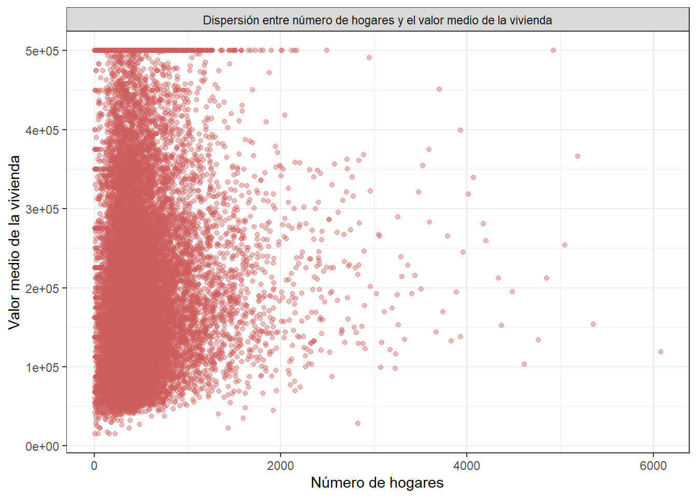
Interpretación:
El diagrama de caja muestra que la mayor parte de las observaciones se concentra en valores bajos del número de hogares, ubicándose la caja muy cerca del eje inferior. A partir de aproximadamente los 1.000 hogares en adelante, se observa una larga secuencia de valores atípicos que se extienden verticalmente hasta alcanzar un punto máximo que supera los 6.000 hogares. Esta distribución refleja una asimetría positiva en la variable, donde la amplia mayoría de los datos toma valores relativamente pequeños y solo unas pocas observaciones presentan cifras considerablemente altas.
Histograma de la variable “ingreso medio”
ggplot(df, aes(x = median_income)) +
geom_histogram(bins = 30, fill = "#0d521e", color = "white") +
labs(
title = "Distribución del ingreso medio",
x = "Ingreso medio",
y = "Frecuencia"
) +
theme_bw()
Interpretación:
El histograma refleja que la mayor parte de las observaciones se concentran en valores de ingreso medio entre 2 y 5, alcanzando un pico de frecuencia máximo cercano a las 2.500 observaciones alrededor del valor 3.5. A partir de allí, a medida que el ingreso medio aumenta, la frecuencia disminuye progresivamente, generando una cola alargada hacia la derecha que se extiende hasta valores cercanos a 10. Además, se aprecia una pequeña concentración aislada en el valor extremo de 15. Esto evidencia una distribución unimodal con un claro sesgo o asimetría positiva.
Histograma para la variable “Antigüedad media de las viviendas”
ggplot(df, aes(x = housing_median_age)) +
geom_histogram(
bins = 30,
fill = "#e67e22",
color = "white"
) +
labs(
title = "Distribución de la antigüedad media de las viviendas",
x = "Antigüedad media de la vivienda (años)",
y = "Frecuencia"
) +
theme_bw()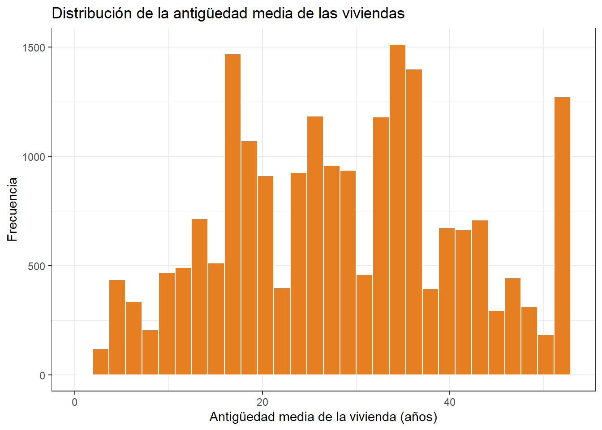
Interpretación:
El histograma de la antigüedad media de las viviendas muestra que los datos se distribuyen desde valores cercanos a los 1 hasta los 52 años. Se observan picos de frecuencia altos alrededor de los 17, 26 y 35 años, superando en estos tramos las 1.000 y 1.400 observaciones. Asimismo, en los valores más bajos (menores a 10 años) y en algunos tramos intermedios (como a los 22 y 31 años) la frecuencia cae por debajo de los 500 registros. Finalmente, destaca una barra bastante alta en el extremo de los 52 años, donde la frecuencia vuelve a subir bruscamente hasta alcanzar cerca de 1.300 observaciones aproximadamente.
3.2 Análisis exploratorio bivariado con la variable respuesta y variables transformadas(Valor medio de la vivienda)
Análisis de la relación entre el ingreso medio y el valor medio de las viviendas
df %>%
ggplot(aes(x= median_income, y=median_house_value)) +
geom_point(alpha = 0.4, color = 'darkblue') +
labs(
y= 'Valor medio de la vivienda',
x = 'Ingreso medio') +
facet_grid(. ~ 'Dispersión entre ingreso medio y el valor medio de la vivienda') +
theme_bw()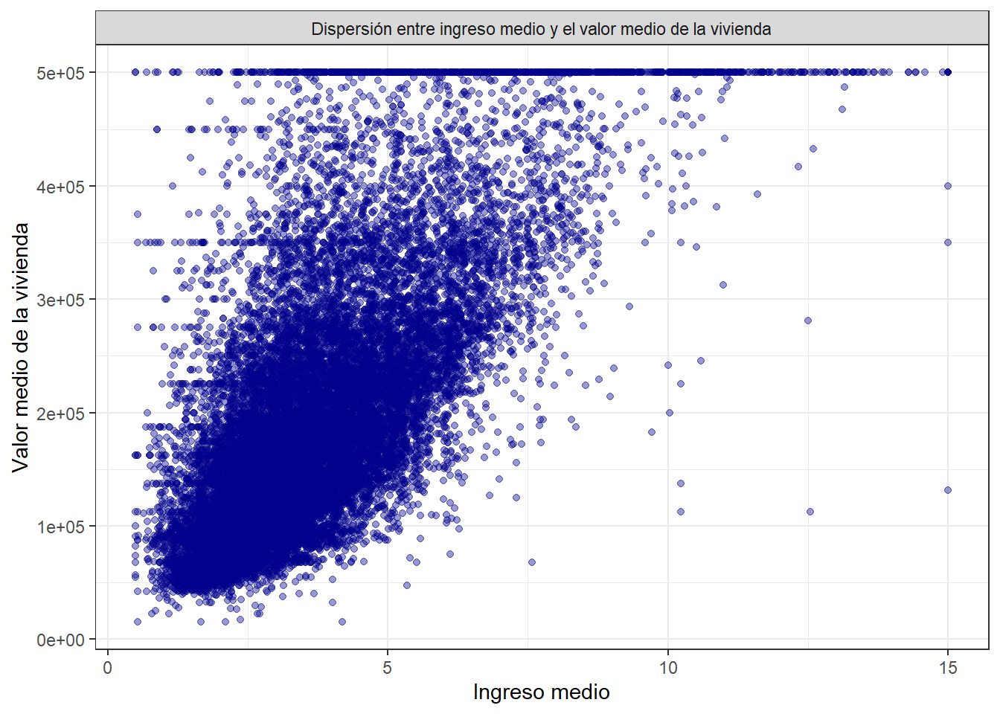
Conclusiones:
Se observa una tendencia positiva entre el ingreso medio y el valor medio de la vivienda. En general, las viviendas tienden a presentar mayores valores a medida que aumenta el ingreso medio. Sin embargo, existe una considerable dispersión en los datos, por lo que el ingreso no explica de manera directa o exclusiva el valor final. Se distingue también una marcada línea horizontal en los 500.000 USD, lo que indica un tope en la medición de la variable respuesta.
Ahora comparemos el valor medio de la vivienda según la proximidad al océano.
df %>%
group_by(ocean_proximity) %>%
summarise (n=length(median_house_value),
media=mean(median_house_value),
sd=sd(median_house_value),
mediana = median(median_house_value),
RIC = IQR(median_house_value),
Q1=quantile(median_house_value,0.25),
Q3=quantile(median_house_value,0.75),
minimo=min(median_house_value),
maximo=max(median_house_value),
asimetria=skewness(median_house_value),
curtosis=kurtosis(median_house_value))## # A tibble: 5 × 12
## ocean_proximity n media sd mediana RIC Q1 Q3 minimo maximo asimetria curtosis
## <fct> <int> <dbl> <dbl> <dbl> <dbl> <dbl> <dbl> <dbl> <dbl> <dbl> <dbl>
## 1 <1H OCEAN 9136 240084. 106124. 214850 125000 164100 289100 17500 500001 0.986 3.32
## 2 INLAND 6551 124805. 70008. 108500 71450 77500 148950 14999 500001 2.11 9.32
## 3 ISLAND 5 380440 80560. 414700 150000 300000 450000 287500 450000 -0.326 1.22
## 4 NEAR BAY 2290 259212. 122819. 233800 183200 162500 345700 22500 500001 0.544 2.29
## 5 NEAR OCEAN 2658 249434. 122477. 229450 172750 150000 322750 22500 500001 0.623 2.46Conclusiones:
Se observa que la proximidad al océano está relacionada con el valor de las viviendas. Las viviendas ubicadas en zonas cercanas a la costa presentan, en general, valores medios más altos que las ubicadas en zonas interiores. La categoría INLAND tiene el menor valor medio (124.805 USD), mientras que ISLAND presenta el mayor (380.440 USD); sin embargo, este último resultado debe tomarse con precaución debido a que solo cuenta con 5 observaciones.
Veamos un gráfico de cajas y bigotes
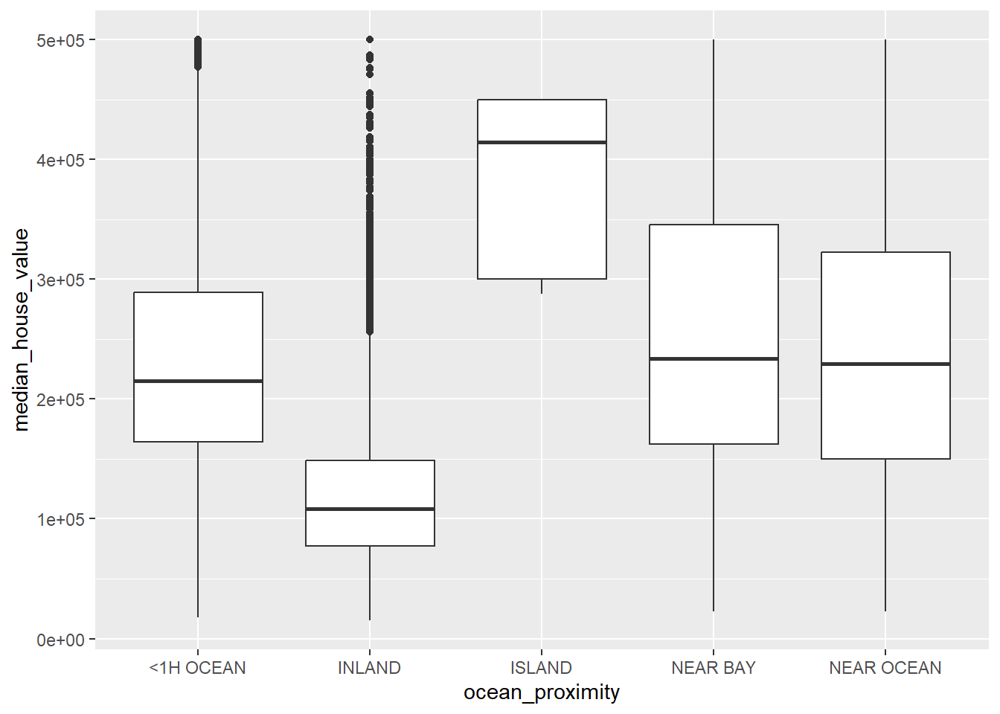
Interpretación:
El diagrama de caja permite visualizar y complementar los resultados obtenidos en la tabla. Se confirma que las viviendas ubicadas en zonas interiores (INLAND) presentan los valores más bajos, mientras que las categorías cercanas al océano muestran valores de vivienda generalmente más altos. En INLAND se observa una gran cantidad de valores atípicos superiores, debido a que, aunque la mayoría de las viviendas presenta valores relativamente bajos, existe un grupo de viviendas con precios considerablemente mayores, llegando incluso a 500.000 USD. También se observa una mayor dispersión en categorías como <1H OCEAN y NEAR BAY. En el caso de ISLAND, aunque presenta los valores más altos, estos deben interpretarse con precaución debido a su reducido número de observaciones.
Longitud y valor medio de la vivienda
df %>%
ggplot(aes(x = longitude, y = median_house_value)) +
geom_point(alpha = 0.4, color = 'palevioletred') +
labs(y = 'Valor medio de la vivienda', x = 'Longitud') +
facet_grid(. ~ 'Dispersión entre longitud y el valor medio de la vivienda') +
theme_bw()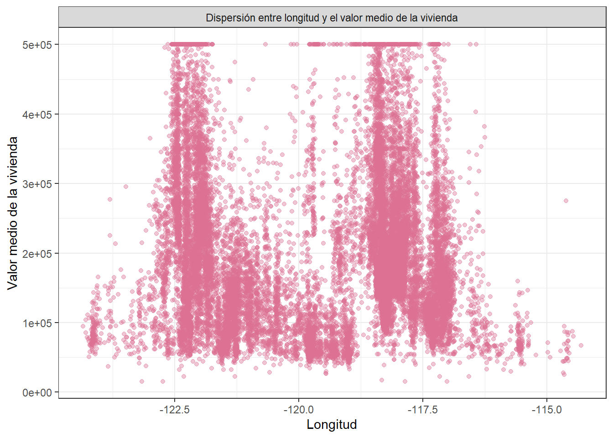
Conclusiones:No se observa una relación lineal clara entre la longitud geográfica y el valor medio de la vivienda. Los datos presentan una alta concentración de puntos en ciertos rangos de longitud, mientras que los valores de las viviendas se encuentran bastante dispersos. Aunque se observan algunos valores de vivienda más altos en determinadas longitudes, no se puede establecer una relación directa entre ambas variables.
Latitud y valor medio de las casas
df %>%
ggplot(aes(x = latitude, y = median_house_value)) +
geom_point(alpha = 0.4, color = 'slategray') +
labs(y = 'Valor medio de la vivienda', x = 'Latitud') +
facet_grid(. ~ 'Dispersión entre latitud y el valor medio de la vivienda') +
theme_bw()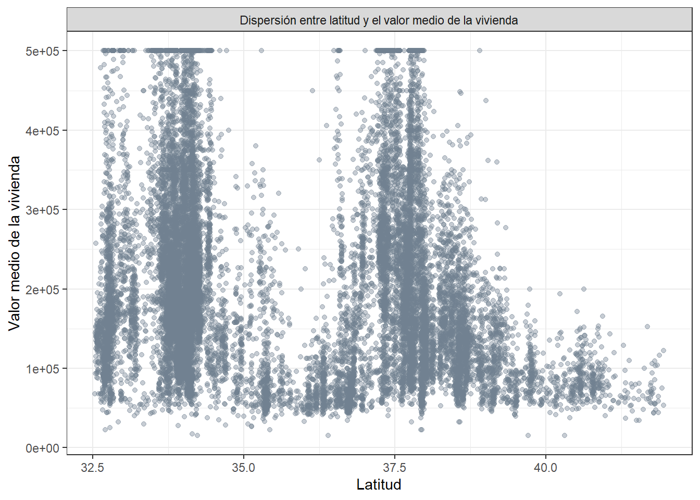
Conclusiones:
La distribución de los puntos muestra que los valores de la vivienda no aumentan ni disminuyen de manera constante a medida que cambia la latitud. Se pueden identificar concentraciones de valores altos en distintos rangos de latitud, mientras que en las zonas intermedias también se presentan valores bajos y altos. Además, los puntos se encuentran bastante dispersos a lo largo del eje vertical, por lo que una misma latitud puede presentar diferentes valores de vivienda. En general, no se aprecia una relación lineal clara entre la latitud y el valor medio de la vivienda, aunque sí se observan diferentes concentraciones de datos a lo largo del rango de latitudes.
Antigüedad media de la vivienda y valor medio de la vivienda
df %>%
ggplot(aes(x = housing_median_age, y = median_house_value)) +
geom_point(alpha = 0.4, color = 'chocolate') +
labs(y = 'Valor medio de la vivienda', x = 'Antigüedad media de la vivienda') +
facet_grid(. ~ 'Dispersión entre antigüedad y el valor medio de la vivienda') +
theme_bw()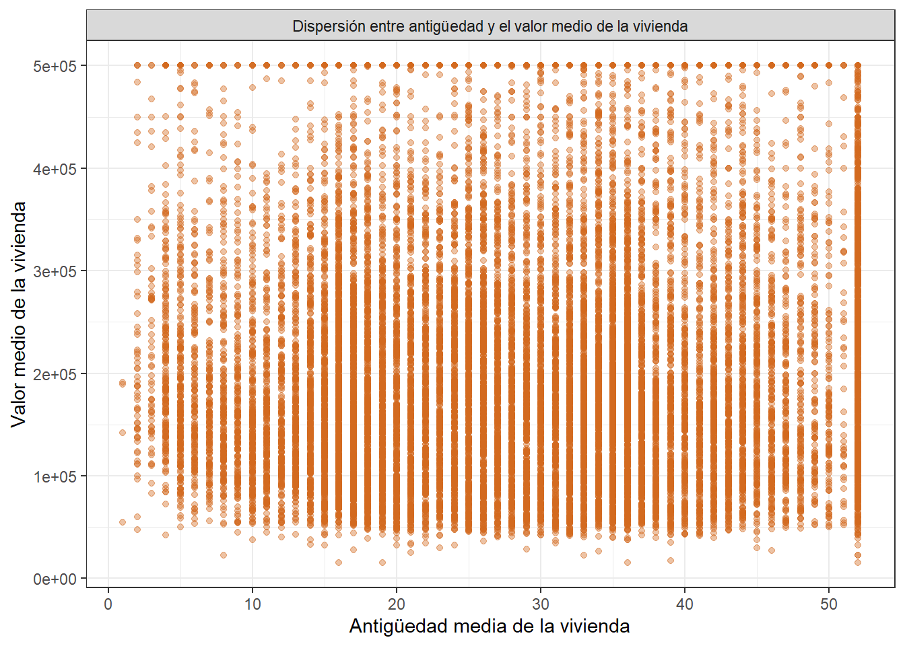
Conclusiones:
En este gráfico, la antigüedad de las viviendas toma valores desde aproximadamente 1 hasta 52 años, y los puntos se encuentran distribuidos a lo largo de prácticamente todo este intervalo. Para cada nivel de antigüedad se presentan valores de vivienda bastante variados, desde valores bajos hasta cerca de 500.000. Además, se aprecia una gran concentración de observaciones en varios niveles de antigüedad, sin que exista una dirección clara en la distribución de los puntos. Por lo tanto, no se identifica una relación lineal evidente entre la antigüedad media de la vivienda y su valor medio a partir de este gráfico.
Cuartos por hogar y valor medio de las viviendas
df %>%
ggplot(aes(x = rooms_per_household, y = median_house_value)) +
geom_point(alpha = 0.4, color = 'seagreen') +
labs(y = 'Valor medio de la vivienda', x = 'Cuartos por hogar') +
facet_grid(. ~ 'Dispersión entre cuartos por hogar y el valor medio de la vivienda') +
theme_bw()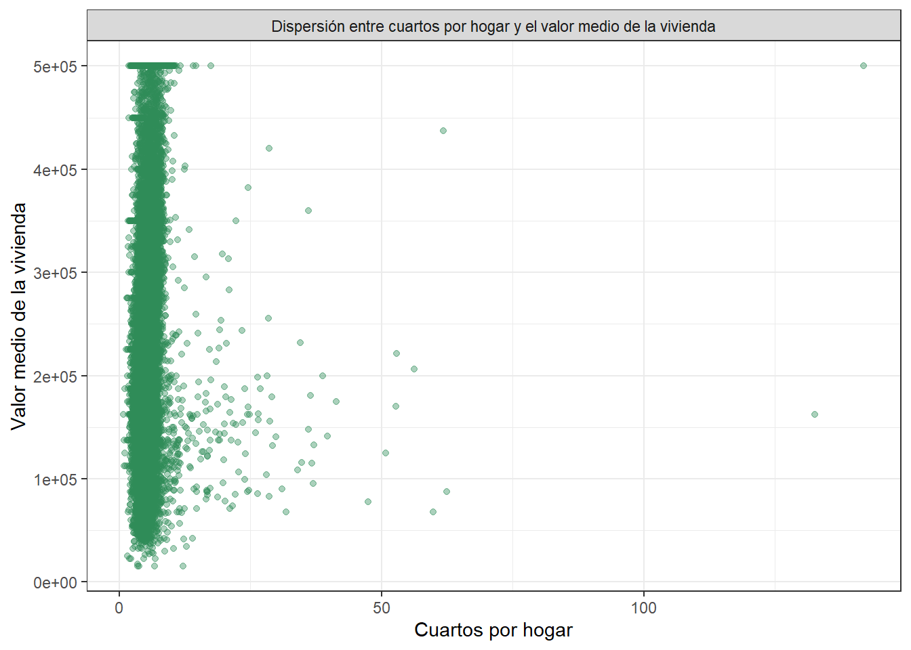
Conclusiones:
La gran mayoría de las observaciones se concentran en valores bajos de cuartos por hogar (entre 0 y 10), donde el valor medio de la vivienda presenta una variación muy amplia, distribuyéndose desde valores cercanos a 0 hasta el máximo cercano a 500.000. A medida que aumenta el número de cuartos por hogar, la cantidad de observaciones disminuye considerablemente y los puntos se dispersan, encontrándose incluso algunos valores atípicos alejados que superan los 50 e incluso los 100 cuartos por hogar. En general, no se observa una relación lineal clara entre los cuartos por hogar y el valor medio de la vivienda.
Proporción de dormitorios respecto al total de habitaciones y valor medio de las viviendas
df %>%
ggplot(aes(x = bedrooms_per_room, y = median_house_value)) +
geom_point(alpha = 0.4, color = 'turquoise') +
labs(y = 'Valor medio de la vivienda', x = 'Proporción de dormitorios respecto al total de habitaciones"') +
facet_grid(. ~ 'Dispersión entre proporción de dormitorios y el valor medio de la vivienda') +
theme_bw()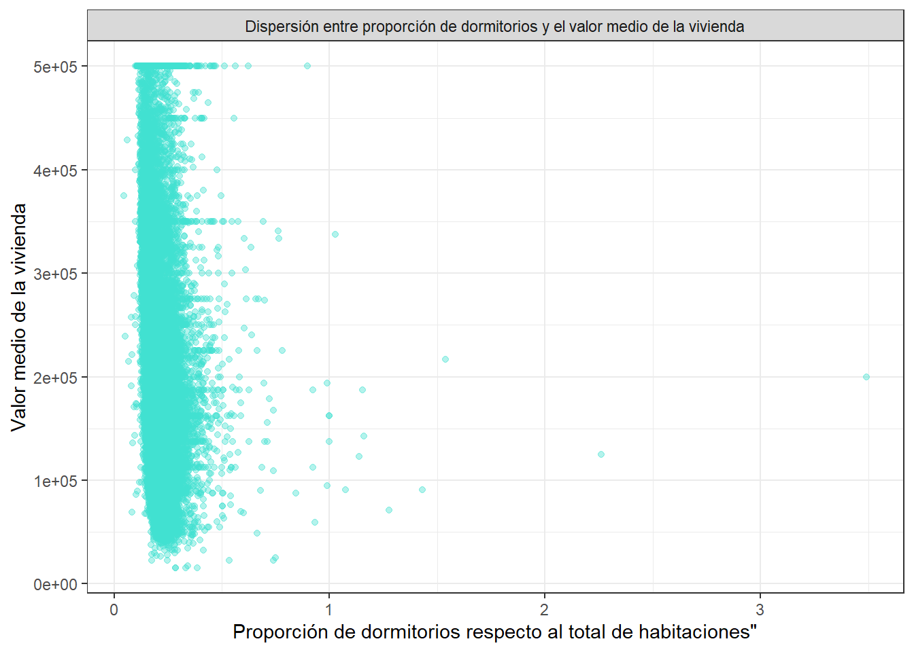
Conclusiones:
La mayor parte de las observaciones se concentra en valores bajos de proporción de dormitorios por cuarto (por debajo de 0,5), donde el valor medio de la vivienda presenta una variación amplia, desde valores cercanos a 0 hasta el máximo cercano a 500.000. A medida que aumenta la proporción de dormitorios, la cantidad de observaciones disminuye notablemente y los puntos se dispersan, encontrándose algunos valores atípicos que llegan hasta 1, 2 e incluso más de 3. En general, no se observa una relación lineal clara entre la proporción de dormitorios por cuarto y el valor medio de la vivienda.
Personas por hogar y valor medio de las viviendas
df %>%
ggplot(aes(x = population_per_household, y = median_house_value)) +
geom_point(alpha = 0.4, color = 'mediumpurple') +
labs(y = 'Valor medio de la vivienda', x = 'Personas por hogar') +
facet_grid(. ~ 'Dispersión entre personas por hogar y el valor medio de la vivienda') +
theme_bw()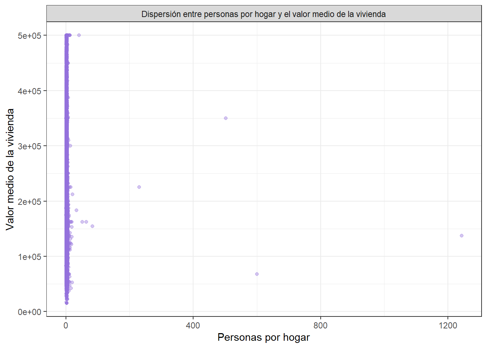
Conclusiones
La gran mayoría de las observaciones se concentran en valores muy bajos de personas por hogar (cercanos a 0), donde el valor medio de la vivienda presenta una amplia variación, distribuyéndose desde valores bajos hasta el máximo cercano a 500.000. Se identifican algunos valores atípicos considerablemente alejados de la concentración principal, llegando incluso hasta más de 1.200 personas por hogar. En general, no se observa una relación lineal clara entre las personas por hogar y el valor medio de la vivienda.
Número de hogares y valor medio de las viviendas
df %>%
ggplot(aes(x = households, y = median_house_value)) +
geom_point(alpha = 0.4, color = 'indianred') +
labs(y = 'Valor medio de la vivienda', x = 'Número de hogares') +
facet_grid(. ~ 'Dispersión entre número de hogares y el valor medio de la vivienda') +
theme_bw()
Conclusiones:
Se observa una alta concentración de puntos en los valores bajos del número de hogares. A medida que aumenta el número de hogares, los puntos se vuelven menos frecuentes y se encuentran más dispersos en cuanto al valor de la vivienda. También se observan algunos valores de viviendas cercanos a 500.000 USD en distintos rangos de hogares. En general, no se aprecia una relación lineal clara entre el número de hogares y el valor medio de la vivienda.
Realicemos de nuevo el ggpairs
## plot: [1, 1] [>------------------------------------------------------------------------------------] 1% est: 0s
## plot: [1, 2] [=>-----------------------------------------------------------------------------------] 2% est: 4s
## plot: [1, 3] [==>----------------------------------------------------------------------------------] 3% est: 6s
## plot: [1, 4] [==>----------------------------------------------------------------------------------] 4% est: 7s
## plot: [1, 5] [===>---------------------------------------------------------------------------------] 5% est: 7s
## plot: [1, 6] [====>--------------------------------------------------------------------------------] 6% est: 7s
## plot: [1, 7] [=====>-------------------------------------------------------------------------------] 7% est: 7s
## plot: [1, 8] [======>------------------------------------------------------------------------------] 8% est: 8s
## plot: [1, 9] [=======>-----------------------------------------------------------------------------] 9% est: 8s
## plot: [1, 10] [=======>----------------------------------------------------------------------------] 10% est: 8s
## plot: [2, 1] [========>----------------------------------------------------------------------------] 11% est: 8s
## plot: [2, 2] [=========>---------------------------------------------------------------------------] 12% est: 8s
## plot: [2, 3] [==========>--------------------------------------------------------------------------] 13% est: 8s
## plot: [2, 4] [===========>-------------------------------------------------------------------------] 14% est: 8s
## plot: [2, 5] [============>------------------------------------------------------------------------] 15% est: 8s
## plot: [2, 6] [=============>-----------------------------------------------------------------------] 16% est: 8s
## plot: [2, 7] [=============>-----------------------------------------------------------------------] 17% est: 7s
## plot: [2, 8] [==============>----------------------------------------------------------------------] 18% est: 8s
## plot: [2, 9] [===============>---------------------------------------------------------------------] 19% est: 7s
## plot: [2, 10] [================>-------------------------------------------------------------------] 20% est: 7s
## plot: [3, 1] [=================>-------------------------------------------------------------------] 21% est: 7s
## plot: [3, 2] [==================>------------------------------------------------------------------] 22% est: 7s
## plot: [3, 3] [===================>-----------------------------------------------------------------] 23% est: 7s
## plot: [3, 4] [===================>-----------------------------------------------------------------] 24% est: 7s
## plot: [3, 5] [====================>----------------------------------------------------------------] 25% est: 7s
## plot: [3, 6] [=====================>---------------------------------------------------------------] 26% est: 7s
## plot: [3, 7] [======================>--------------------------------------------------------------] 27% est: 7s
## plot: [3, 8] [=======================>-------------------------------------------------------------] 28% est: 7s
## plot: [3, 9] [========================>------------------------------------------------------------] 29% est: 7s
## plot: [3, 10] [========================>-----------------------------------------------------------] 30% est: 7s
## plot: [4, 1] [=========================>-----------------------------------------------------------] 31% est: 7s
## plot: [4, 2] [==========================>----------------------------------------------------------] 32% est: 6s
## plot: [4, 3] [===========================>---------------------------------------------------------] 33% est: 6s
## plot: [4, 4] [============================>--------------------------------------------------------] 34% est: 6s
## plot: [4, 5] [=============================>-------------------------------------------------------] 35% est: 6s
## plot: [4, 6] [==============================>------------------------------------------------------] 36% est: 6s
## plot: [4, 7] [==============================>------------------------------------------------------] 37% est: 6s
## plot: [4, 8] [===============================>-----------------------------------------------------] 38% est: 6s
## plot: [4, 9] [================================>----------------------------------------------------] 39% est: 6s
## plot: [4, 10] [=================================>--------------------------------------------------] 40% est: 6s
## plot: [5, 1] [==================================>--------------------------------------------------] 41% est: 6s
## plot: [5, 2] [===================================>-------------------------------------------------] 42% est: 6s
## plot: [5, 3] [====================================>------------------------------------------------] 43% est: 5s
## plot: [5, 4] [====================================>------------------------------------------------] 44% est: 5s
## plot: [5, 5] [=====================================>-----------------------------------------------] 45% est: 5s
## plot: [5, 6] [======================================>----------------------------------------------] 46% est: 5s
## plot: [5, 7] [=======================================>---------------------------------------------] 47% est: 5s
## plot: [5, 8] [========================================>--------------------------------------------] 48% est: 5s
## plot: [5, 9] [=========================================>-------------------------------------------] 49% est: 5s
## plot: [5, 10] [=========================================>------------------------------------------] 50% est: 5s
## plot: [6, 1] [==========================================>------------------------------------------] 51% est: 5s
## plot: [6, 2] [===========================================>-----------------------------------------] 52% est: 5s
## plot: [6, 3] [============================================>----------------------------------------] 53% est: 5s
## plot: [6, 4] [=============================================>---------------------------------------] 54% est: 4s
## plot: [6, 5] [==============================================>--------------------------------------] 55% est: 4s
## plot: [6, 6] [===============================================>-------------------------------------] 56% est: 4s
## plot: [6, 7] [===============================================>-------------------------------------] 57% est: 4s
## plot: [6, 8] [================================================>------------------------------------] 58% est: 4s
## plot: [6, 9] [=================================================>-----------------------------------] 59% est: 4s
## plot: [6, 10] [=================================================>----------------------------------] 60% est: 4s
## plot: [7, 1] [===================================================>---------------------------------] 61% est: 4s
## `stat_bin()` using `bins = 30`. Pick better value `binwidth`. plot: [7, 2]
## [====================================================>--------------------------------] 62% est: 4s `stat_bin()`
## using `bins = 30`. Pick better value `binwidth`. plot: [7, 3]
## [=====================================================>-------------------------------] 63% est: 4s `stat_bin()`
## using `bins = 30`. Pick better value `binwidth`. plot: [7, 4]
## [=====================================================>-------------------------------] 64% est: 4s `stat_bin()`
## using `bins = 30`. Pick better value `binwidth`. plot: [7, 5]
## [======================================================>------------------------------] 65% est: 4s `stat_bin()`
## using `bins = 30`. Pick better value `binwidth`. plot: [7, 6]
## [=======================================================>-----------------------------] 66% est: 4s `stat_bin()`
## using `bins = 30`. Pick better value `binwidth`. plot: [7, 7]
## [========================================================>----------------------------] 67% est: 4s plot: [7, 8]
## [=========================================================>---------------------------] 68% est: 4s plot: [7, 9]
## [==========================================================>--------------------------] 69% est: 3s plot: [7, 10]
## [==========================================================>-------------------------] 70% est: 3s plot: [8, 1]
## [===========================================================>-------------------------] 71% est: 3s plot: [8, 2]
## [============================================================>------------------------] 72% est: 3s plot: [8, 3]
## [=============================================================>-----------------------] 73% est: 3s plot: [8, 4]
## [==============================================================>----------------------] 74% est: 3s plot: [8, 5]
## [===============================================================>---------------------] 75% est: 3s plot: [8, 6]
## [================================================================>--------------------] 76% est: 3s plot: [8, 7]
## [================================================================>--------------------] 77% est: 3s `stat_bin()`
## using `bins = 30`. Pick better value `binwidth`. plot: [8, 8]
## [=================================================================>-------------------] 78% est: 3s plot: [8, 9]
## [==================================================================>------------------] 79% est: 2s plot: [8, 10]
## [==================================================================>-----------------] 80% est: 2s plot: [9, 1]
## [====================================================================>----------------] 81% est: 2s plot: [9, 2]
## [=====================================================================>---------------] 82% est: 2s plot: [9, 3]
## [======================================================================>--------------] 83% est: 2s plot: [9, 4]
## [======================================================================>--------------] 84% est: 2s plot: [9, 5]
## [=======================================================================>-------------] 85% est: 2s plot: [9, 6]
## [========================================================================>------------] 86% est: 2s plot: [9, 7]
## [=========================================================================>-----------] 87% est: 1s `stat_bin()`
## using `bins = 30`. Pick better value `binwidth`. plot: [9, 8]
## [==========================================================================>----------] 88% est: 1s plot: [9, 9]
## [===========================================================================>---------] 89% est: 1s plot: [9, 10]
## [===========================================================================>--------] 90% est: 1s plot: [10, 1]
## [===========================================================================>--------] 91% est: 1s plot: [10, 2]
## [============================================================================>-------] 92% est: 1s plot: [10, 3]
## [=============================================================================>------] 93% est: 1s plot: [10, 4]
## [==============================================================================>-----] 94% est: 1s plot: [10, 5]
## [===============================================================================>----] 95% est: 1s plot: [10, 6]
## [================================================================================>---] 96% est: 0s plot: [10, 7]
## [================================================================================>---] 97% est: 0s `stat_bin()`
## using `bins = 30`. Pick better value `binwidth`. plot: [10, 8]
## [=================================================================================>--] 98% est: 0s plot: [10, 9]
## [==================================================================================>-] 99% est: 0s plot: [10, 10]
## [===================================================================================]100% est: 0s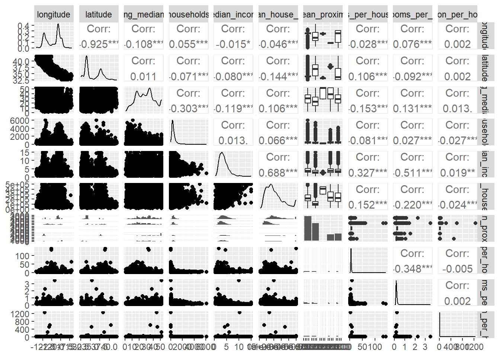
Conclusiones:
Al comparar esta matriz gráfica con la realizada antes de la transformación de variables, se observa un cambio relevante en la estructura de los datos. Mientras que originalmente total_rooms, total_bedrooms, population y households presentaban patrones lineales ascendentes muy marcados y apretados entre sí, las variables derivadas (rooms_per_household, bedrooms_per_room y population_per_household) muestran distribuciones con relaciones visuales más dispersas y menos acopladas entre ellas.
Esto sugiere que las variables creadas aportan representaciones distintas de las características originales, reduciendo la concentración de patrones alineados que se observaba entre los conteos totales. Así, cada variable derivada captura un aspecto específico: la dimensión promedio de la vivienda (rooms_per_household), la proporción interna de dormitorios respecto al total de cuartos (bedrooms_per_room) y el promedio de personas por hogar (population_per_household). Las variables no modificadas (longitude, latitude, housing_median_age, households y median_income) sostienen el mismo comportamiento exploratorio observado en la matriz inicial.
Chapter 4 Comprobación del teorema de diferencia de medias paso a paso
4.1 Cuando los datos son pareados
Base de datos
Datos de tiempos antes y después de la intervención educativa
datos <- data.frame(
estudiante = c(1:10),
antes = c(12.9, 13.5, 12.8, 15.6, 17.2, 19.2, 12.6, 15.3, 14.4, 11.3),
despues = c(12.7, 13.6, 12.0, 15.2, 16.8, 20.0, 12.0, 15.9, 16.0, 11.1)
)Basándonos en el resultado obtenido usando R, realizaremos el paso a paso del teorema de diferencia de medias y verificaremos si es consistente.
Resultado con R:
##
## Paired t-test
##
## data: datos$despues and datos$antes
## t = 0.21331, df = 9, p-value = 0.8358
## alternative hypothesis: true mean difference is not equal to 0
## 95 percent confidence interval:
## -0.4802549 0.5802549
## sample estimates:
## mean difference
## 0.05Explicación:
Se aplicó un t-test pareado para comparar los valores de antes y después en los mismos estudiantes. El resultado da un t muy bajo (0.213) y un valor p de 0.8358, muy por encima de 0.05, así que no se rechaza la hipótesis nula: no hay evidencia de que exista una diferencia real entre las dos mediciones. Esto se confirma con el intervalo de confianza (-0.48 a 0.58), que sí incluye el cero, y con la diferencia promedio tan pequeña (0.05), lo que indica que, en promedio, los valores prácticamente no cambiaron entre el antes y el después.
Ahora confirmaremos este resultado usando el teorema paso a paso:
## [1] -0.2 0.1 -0.8 -0.4 -0.4 0.8 -0.6 0.6 1.6 -0.2# 2. Media y desviación estándar de las diferencias
media_d <- mean(d)
sd_d <- sd(d)
n <- length(d)
media_d; sd_d; n## [1] 0.05## [1] 0.7412452## [1] 10## [1] 0.2133085## [1] 9# 5. Valor p (dos colas)
p_manual <- 2 * pt(-abs(t_manual), df = df_manual)
p_manual # debería dar ≈ 0.8358## [1] 0.83584# 6. Intervalo de confianza al 95%
error_estandar <- sd_d / sqrt(n)
t_critico <- qt(0.975, df = df_manual)
ic_inferior <- media_d - t_critico * error_estandar
ic_superior <- media_d + t_critico * error_estandar
ic_inferior; ic_superior ## [1] -0.4802549## [1] 0.5802549##
## Paired t-test
##
## data: datos$despues and datos$antes
## t = 0.21331, df = 9, p-value = 0.8358
## alternative hypothesis: true mean difference is not equal to 0
## 95 percent confidence interval:
## -0.4802549 0.5802549
## sample estimates:
## mean difference
## 0.05Conclusión final:
Se comprobó que los resultados obtenidos manualmente son exactamente iguales a los que da la función t.test() de R. El t calculado a mano fue 0.2133085 con 9 grados de libertad (n-1, ya que son 10 pares de datos), y t.test() arrojó t = 0.21331, df = 9: los mismos valores. El valor p también coincidió en ambos casos: 0.8358 de forma manual y 0.8358 con la función automática. Y el intervalo de confianza calculado a mano (-0.4802549 a 0.5802549) es idéntico al que reporta R (-0.4802549 a 0.5802549). Con esto queda comprobado que el procedimiento manual sigue exactamente la misma lógica matemática que usa t.test() por dentro.
Ahora, interpretando el resultado: como el valor p (0.8358) es mucho mayor a 0.05, no hay evidencia suficiente para rechazar la hipótesis nula, por lo que se concluye que no existe una diferencia significativa entre antes y después. Esto se refuerza con el intervalo de confianza, que incluye el cero (lo cual es coherente con no rechazar la hipótesis nula), y con la diferencia promedio tan pequeña (0.05), que prácticamente no representa ningún cambio real entre las dos mediciones.
4.2 Cuando las varianzas son distintas
Importemos la base de datos y hagamos las transformaciones necesarias
df <- read_excel("data/datos_economia.xlsx")
df$ `Tipo de cuenta` <- factor(df$`Tipo de cuenta`)
#Transformación 2 ----
dfi <- df %>%
filter(`Tipo de cuenta` == 'Inversion') %>%
pull (Precio)
dfg <- df %>%
filter(`Tipo de cuenta` == 'Ganancia') %>%
pull (Precio)Basándonos en el resultado obtenido usando R, realizaremos el paso a paso del teorema de diferencia de medias y verificaremos si es consistente.
Resultado con R:
##
## Welch Two Sample t-test
##
## data: dfi and dfg
## t = 46.212, df = 107.87, p-value < 2.2e-16
## alternative hypothesis: true difference in means is not equal to 0
## 95 percent confidence interval:
## 4126960 4496870
## sample estimates:
## mean of x mean of y
## 5090405.9 778490.6Explicación:
Se realizó la prueba t de Welch para comparar las medias de dfi y dfg, sin asumir que las varianzas de los dos grupos son iguales.
El resultado muestra un valor p extremadamente pequeño (p < 2.2e-16), mucho menor a 0.05, por lo que se rechaza la hipótesis nula de igualdad de medias. Esto indica que existe una diferencia estadísticamente significativa entre las medias de ambos grupos: dfi tiene una media de 5.090.405,9, mientras que dfg tiene una media de 778.490,6. Además, el intervalo de confianza del 95% (4.126.960 – 4.496.870) no incluye el cero, lo que confirma esta diferencia.
Ahora confirmaremos este resultado usando el teorema paso a paso:
# 1. Calcular medias y varianzas de cada grupo
media_i <- mean(dfi)
media_g <- mean(dfg)
var_i <- var(dfi)
var_g <- var(dfg)
n_i <- length(dfi)
n_g <- length(dfg)
# 2. Calcular el estadístico t manualmente
t_manual <- (media_i - media_g) / sqrt(var_i/n_i + var_g/n_g)
t_manual## [1] 46.21171# 3. Calcular los grados de libertad (Welch-Satterthwaite)
df_manual <- (var_i/n_i + var_g/n_g)^2 /
( (var_i/n_i)^2 / (n_i - 1) + (var_g/n_g)^2 / (n_g - 1) )
df_manual## [1] 107.87## [1] 6.432654e-73# 5. Comparar contra el resultado automático de R
t.test(x = dfi, y = dfg, var.equal = FALSE, paired = FALSE)##
## Welch Two Sample t-test
##
## data: dfi and dfg
## t = 46.212, df = 107.87, p-value < 2.2e-16
## alternative hypothesis: true difference in means is not equal to 0
## 95 percent confidence interval:
## 4126960 4496870
## sample estimates:
## mean of x mean of y
## 5090405.9 778490.6Conclusión final:
Al comparar los resultados, el t manual (46.21171) y los grados de libertad (107.87) coinciden con los que da t.test() en R. Con el valor p pasa algo similar: R lo muestra como “< 2.2e-16” porque ese es el límite de precisión que maneja el programa para representar números tan pequeños, pero al calcularlo a mano se obtiene el valor real, 6.43e-73, que de hecho es mucho más pequeño que 2.2e-16. O sea, no es que estén en desacuerdo, simplemente uno es la versión completa del otro.
Con un p tan cercano a cero, se rechaza la hipótesis nula de igualdad de medias: sí hay una diferencia significativa entre dfi y dfg. Esto también se ve reflejado en el intervalo de confianza (4.126.960 – 4.496.870), que no incluye el cero, y en la diferencia tan grande entre las medias (5.090.405,9 vs 778.490,6). En resumen, todo el cálculo manual confirma que el resultado que arroja t.test() es correcto.
Chapter 5 Comprobación del teorema de razón de varianzas paso a paso
Importemos la base de datos y hagamos las transformaciones necesarias
df <- read_excel("C:/Users/Admin/Downloads/Métodos estadísticos (4)/Métodos estadísticos/codigo/data/datos_medicos.xlsx")#tranformación ----
df$Presion <- factor(df$Presion)
dfs <- df %>%
filter(Presion == 'PresionSistolica') %>%
pull(Valores)
dfd <- df %>%
filter(Presion == 'PresionDiastolica') %>%
pull (Valores)Basándonos en el resultado obtenido usando R, realizaremos el paso a paso del teorema de razón de varianzas con los datos de presión arterial y verificaremos si es consistente.
Resultado con R:
Apliquemos la función var.test a los datos de presión arterial
##
## F test to compare two variances
##
## data: dfs and dfd
## F = 0.92784, num df = 99, denom df = 99, p-value = 0.7102
## alternative hypothesis: true ratio of variances is not equal to 1
## 95 percent confidence interval:
## 0.6242897 1.3789878
## sample estimates:
## ratio of variances
## 0.9278405Explicación:
Se realizó la prueba F (var.test) para comparar las varianzas de dfs y dfd, con el objetivo de verificar si las varianzas de la presión sistólica y la presión diastólica son iguales.
El resultado muestra un valor p de 0.7102, mucho mayor a 0.05, por lo que no se rechaza la hipótesis nula de igualdad de varianzas. Esto indica que no existe evidencia estadísticamente significativa de que las varianzas de ambos grupos sean diferentes: dfs tiene una varianza de 83.32, mientras que dfd tiene una varianza de 89.80, valores bastante cercanos entre sí. Además, el intervalo de confianza del 95% (0.624 – 1.379) incluye el valor 1, lo que confirma esta conclusión, ya que 1 representa el caso en que ambas varianzas serían exactamente iguales.
Ahora confirmaremos este resultado usando el teorema paso a paso:
Paso 1: Planteamiento de hipótesis
\[H_0: \sigma^2_{sistolica} = \sigma^2_{diastolica}\] \[H_1: \sigma^2_{sistolica} \neq \sigma^2_{diastolica}\]
Paso 2: Teorema de razón de varianzas
Si \(X_1, ..., X_{n_1}\) y \(Y_1,...,Y_{n_2}\) provienen de poblaciones normales independientes, el estadístico:
\[F = \frac{S_1^2}{S_2^2} \sim F_{n_1-1,\ n_2-1}\]
bajo \(H_0: \sigma_1^2 = \sigma_2^2\).
Paso 3: Cálculo de las varianzas muestrales
## [1] 83.32328## [1] 89.80346Paso 4: Cálculo del estadístico F
## [1] 0.9278405Paso 5: Grados de libertad
## [1] 99## [1] 99Paso 6: Cálculo del p-valor
## [1] 0.7101778Paso 7: Intervalo de confianza al 95%
alpha <- 0.05
IC_inferior <- F_calculado / qf(1 - alpha/2, gl1, gl2)
IC_superior <- F_calculado / qf(alpha/2, gl1, gl2)
c(IC_inferior, IC_superior)## [1] 0.6242897 1.3789878Conclusión final:
Al comparar los resultados, el F calculado a mano (0.9278405) y los grados de libertad (99 y 99) coinciden exactamente con los que da var.test() en R. Con el p-valor pasa lo mismo: tanto el cálculo manual como la función arrojan 0.7102, por lo que no hay ninguna discrepancia entre ambos métodos.
Con un p-valor tan alto (0.7102), muy por encima de 0.05, no se rechaza la hipótesis nula de igualdad de varianzas: no hay evidencia de que exista una diferencia significativa entre la varianza de dfs y la de dfd. Esto también se ve reflejado en el intervalo de confianza (0.6242897 – 1.3789878), que sí incluye el valor 1, y en lo parecidas que son las varianzas de ambos grupos (83.32 vs 89.80). En resumen, todo el cálculo manual confirma que el resultado que arroja var.test() es correcto, y además respalda que, al comparar las medias de la presión sistólica y diastólica más adelante, se puede usar la prueba t asumiendo varianzas iguales.